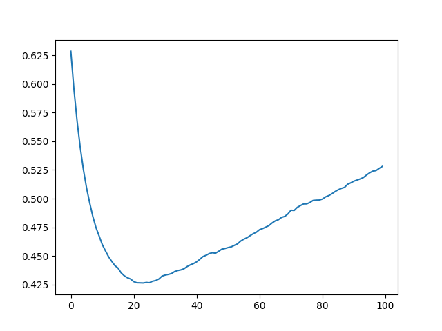
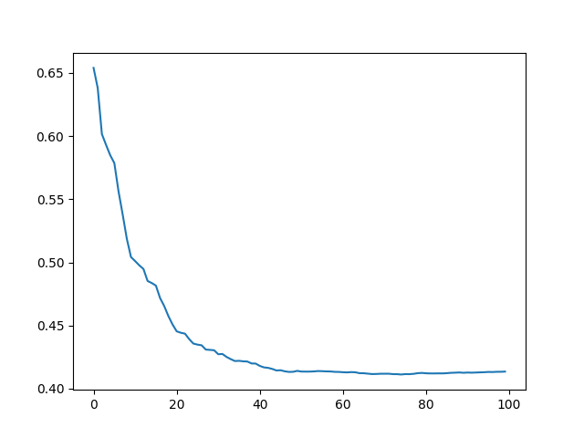
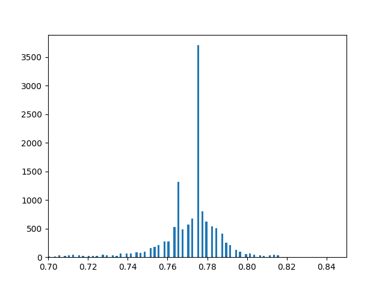
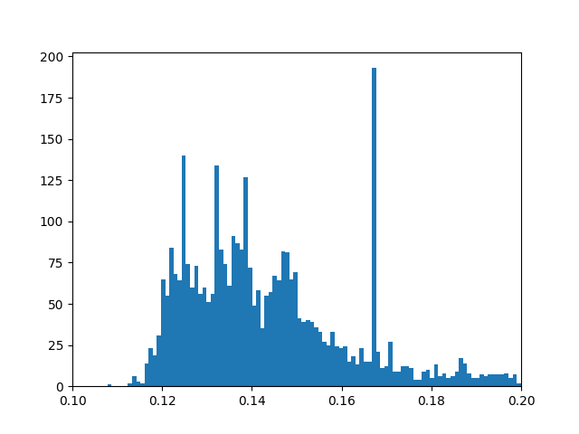
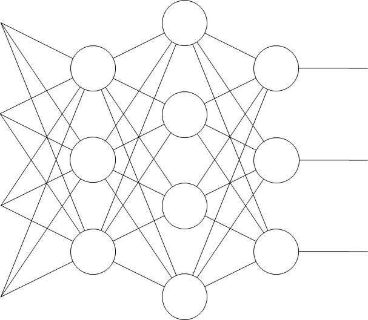
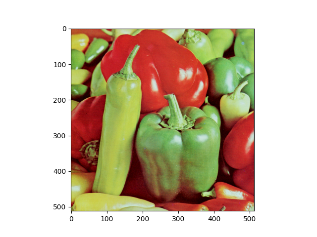
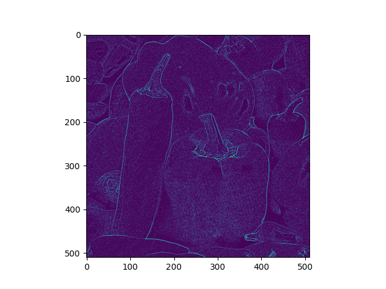
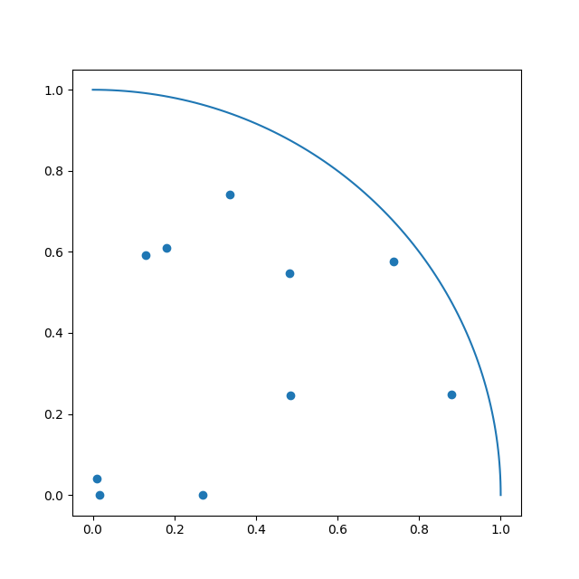
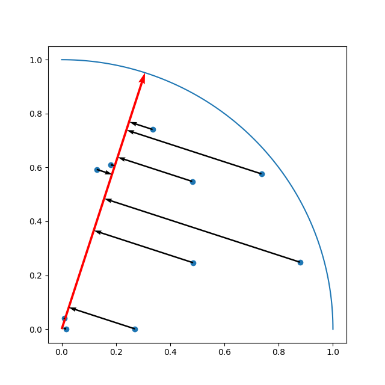

文系の文系による文系のためのプログラマー向けの機械学習ガイドです。今どきの機械学習ライブラリはとてもよくできているので、私のような数学ダメダメな文系プログラマーでも機械学習できちゃうんですな。機械学習してみたい文系プログラマーの皆様、すげー簡単ですから、一緒に機械学習しましょう。
本稿のプログラムはすべてhttps://github.com/tail-island/machine-learning-primerに置きました。お時間があるときにでも、実行してみてください。
機械学習とは？
コンピューターは頭が悪くて嫌になる！ コンピューターは頭が悪くて「アレをイイ感じにやっておいて」を理解できないから、我々プログラマーが細かくやり方を指示するプログラムを書いているんですもんね。そんなへっぽこなコンピューターが学習という高度なことをやるなんて、とても信じられない！
はい。おっしゃる通り。実は機械学習（machine learning）ってのは無から有を生み出すすごいものではなくて、プログラム中のパラメーター（変数の値）を調整してくれるだけの、学習っちゃあ学習なんだけど冷静に考えるとなんだかなぁってものなんですよ。
具体例で考えましょう。西暦を令和に変換するプログラムを手で書いてみてください。たぶん、こんなコードになるんじゃないでしょうか？
def hand_made_version(year):
return year - 2018で、このコードの2018の部分を書くのが面倒くさいなぁ、コンピューターが自動で設定してくれれば楽だなぁと思ったとしてください。そんな時は、機械学習が有効です。コードはこんな感じ。
from sklearn.linear_model import LinearRegression
xs = ((2019,), (2020,), (2021,), (2022,), (2023,), (2024,), (2025,), (2026,), (2027,))
ys = (1, 2, 3, 4, 5, 6, 7, 8, 9)
model = LinearRegression()
model.fit(xs, ys)
def machine_learning_version(year):
xs = ((year,),)
ys = model.predict(xs)
return ys[0]コードが増えてるやんけ、という批判は忘れて、どうしてこのコードで西暦を令和に変換できるのかを考えてみましょう。
LinearRegressionクラスは、線形回帰（linear
regression）と呼ばれる機械学習の手法を実装したクラスで、線形回帰は、a1 * x[0] + a2 * x[1] + a3 * x[2] ... + bというプログラムで表現可能な場合向けの手法です。西暦から令和の場合は1 * year - 2018で表現できますから、この線形回帰がバッチリあてはまります。
で、そのa1 = 1やb = -2018はどうやって導くのかというと、データから導きます。そのデータが上のコードのxsとys。2019の時に1になるにはパラメーターをどんな値にすればよいのかなぁ、2020の時に2になるにはどうすればよいのかなぁと試して、できるだけ相違が少ない値を設定していきます。それを実現するための数学のテクニックがいろいろあるらしいのですけど、我々プログラマーがやらなければならないのはfit()メソッドを呼び出すだけ。
以上で機械学習してパラメーターを適切な値に調整してくれるので、あとは、predict()メソッドを呼び出して予測させればオッケー。線形回帰は入力が配列であることを期待しているのと、あと、一回で複数データ分の予測ができるように作られているので、型を揃えるためにxs = ((year,),)したりys[0]をリターンしています。
このように、機械学習ってのは、与えられたデータに合うようにパラメーターを調整しているだけなんです。これは、深層学習のような最先端の手法でも同じ。ほら、機械学習って簡単そうでしょ？
機械学習には、様々な手法がある
もう少し複雑な問題で、もっと機械学習してみましょう。東京都の月平均気温からアイスクリーム月別支出額を予測する場合でやってみます。
まずはデータです。気象庁のWebサイトから東京都の月平均気温を、日本アイスクリーム協会のWebサイトからアイスクリーム月別支出金額をもらってきました。
で、再利用性を高めるためにモジュール化したコードはこんな感じ。
import numpy as np
# 東京都の月平均気温。https://www.data.jma.go.jp/obd/stats/etrn/
xs = np.array((
(6.1,), (7.2,), (10.1,), (15.4,), (20.2,), (22.4,), (25.4,), (27.1,), (24.4,), (18.7,), (11.4,), (8.9,),
(5.8,), (6.9,), (8.5,), (14.7,), (20,), (22,), (27.3,), (26.4,), (22.8,), (16.8,), (11.9,), (6.6,),
(4.7,), (5.4,), (11.5,), (17,), (19.8,), (22.4,), (28.3,), (28.1,), (22.9,), (19.1,), (14,), (8.3,),
(5.6,), (7.2,), (10.6,), (13.6,), (20,), (21.8,), (24.1,), (28.4,), (25.1,), (19.4,), (13.1,), (8.5,),
(7.1,), (8.3,), (10.7,), (12.8,), (19.5,), (23.2,), (24.3,), (29.1,), (24.2,), (17.5,), (14,), (7.7,)
))
# アイスクリーム月別支出額。https://www.icecream.or.jp/biz/data/expenditures.html
ys = np.array((
464, 397, 493, 617, 890, 883, 1_292, 1_387, 843, 621, 459, 562,
489, 382, 472, 624, 915, 914, 1_394, 1_370, 826, 599, 489, 573,
507, 416, 607, 746, 894, 1_021, 1_506, 1_443, 861, 640, 492, 537,
494, 423, 542, 667, 1_000, 991, 1_236, 1_513, 996, 724, 531, 584,
510, 482, 610, 689, 1_040, 1_123, 1_155, 1_658, 1_025, 649, 573, 599
))
def get_dataset():
return xs, ys学習した結果を可視化して確認するための、matplotlibを使用してグラフを描画するモジュールがこちら。
import matplotlib.pyplot as plot
import numpy as np
def check(dataset, model):
# 実データを取得します。
xs, ys = dataset
# 実データを青色の散布図で描画します。
plot.plot(xs, ys, 'bo')
# 予測データを取得します。
pred_xs = np.linspace(np.min(xs), np.max(xs), 1000).reshape(-1, 1)
pred_ys = model.predict(pred_xs)
# 予測データを赤色の線グラフで描画します。
plot.plot(pred_xs, pred_ys, 'r-')
# 描画結果を表示します。
plot.show()最後。最も重要な線形回帰で機械学習する部分のコードは、こんな感じ。
from checker import check
from dataset import get_dataset
from sklearn.linear_model import LinearRegression
# データセットを取得します
dataset = get_dataset()
# モデルを作成して、機械学習します
model = LinearRegression()
model.fit(*dataset)
# 図を作成して精度をチェックします
check(dataset, model)……西暦から令和への変換とほとんど同じですな。実は、機械学習する部分は、ライブラリを使用するなら、我々プログラマーには最も簡単な部分なんです。
では、試してみましょう。プログラムを実行してみると、以下のグラフが表示されるはずです。

線形回帰なのでアイスクリーム月別支出金額をa * 東京の月平均気温 + bで計算していますから、予測結果は直線になるわけ。で、西暦から令和への変換とは違って実データにバラツキがあるので、できるだけデータの中央を通るようなパラメーターに調整されたというわけ。
ここでちょっと考えてみてください。もし、貴方の実家がアイスクリームに特化した駄菓子屋で、年老いた両親から仕入れの無駄を排除したいと相談されたら（アイスクリームには賞味期限がないので無駄があっても大丈夫な気もしますけど）、貴方のプログラマー力をどう使いますか？ いろいろ考えて複雑なアルゴリズムを組み立てる……のは、面倒くさいですよね？ 「アルゴリズムを考えるのが面倒だから、とりあえず機械学習をやってみよう」という考え方が、なんだか良さそうな気がしてきませんか？ プログラミングはとても簡単なので、すぐに試せますしね。
あと、上の線形回帰のプログラムの結果を見て、真夏の気温が高い書き入れ時に仕入れ量が少なくて損が出ちゃうじゃんと思った方も、ご安心ください。機械学習には様々な手法があるので、別の手法を試してみればよいんですよ。
今回は、決定木という手法を使用してみます。決定木というのは、if/elseを使う手法で、コードにするとこんな感じ。
if x <= a1:
if x <= a2:
return b1
else
return b2
else
if x <= a3:
return b3
else
return b4このa1～a3とb1～b4を、データをもとにしてイイ感じに調整するわけですね。で、その決定木を使用して機械学習するコードは、こんな感じ。
from checker import check
from dataset import get_dataset
from sklearn.tree import DecisionTreeRegressor, export_text
# データセットを取得します
dataset = get_dataset()
# モデルを作成して、機械学習します
model = DecisionTreeRegressor(max_depth=3)
model.fit(*dataset)
# 図を作成して精度をチェックします
check(dataset, model)……間違い探しみたいな感じになっちゃってごめんなさい。このコードは線形回帰の時とほとんど同じで、違いは、LinearRegression()をDecisionTree(max_depath=3)に変更しただけです。
各手法のインターフェースは統一されているので、手法変更時のコード修正は本当に少しで済みます。ある手法でダメだったら、5秒くらいかけて少しコードを書き換えて、別の手法を試せばよい。ほら、機械学習って、簡単でしょ？
さて、このプログラムの実行結果はこんな感じになります。

線形回帰より精度が向上していて素晴らしい！ 予測の線がカクカクになっていますけど、これ、if/elseで定数をリターンしているのだから、我々プログラマーには自明の結果ですよね。
機械学習で出来ることは、いろいろある
でも、世の中って数値で表せることだけじゃなくね？ 赤と青の薬のどちらを飲むべきかとかは？ そうお考えになった方、ご安心ください。機械学習は数値以外を予測することもできるんです。ここまででやってきたように数値を予測する機械学習を回帰（regression）と呼ぶのですけど、それ以外にも、クラス分類（classification）とクラスタリング（clustering）ができます。これらを、具体的にやってみましょう。
データ収集
お題は、私の趣味であるバイク（健康的な人が乗るbicycleじゃなくて、頭が悪い人が乗るmotorcycleの方）にします。
まずはデータ集めから。新しいバイクを買うお金なんかないのに見るのをやめられないBikeBrosのWebサイトからデータを取得します。でも、手でデータをコピー＆ペーストするのは大変ですから、プログラムを組んでデータを集めましょう。
import csv
import requests
from bs4 import BeautifulSoup
from funcy import concat, first
from itertools import starmap
from time import sleep
from urllib.parse import urljoin
def get_soup(url):
html = requests.get(url)
html.encoding = 'UTF8'
return BeautifulSoup(html.text, 'html.parser')
def get_row_urls(category_url):
sleep(10) # サイトに迷惑をかけないよう、スリープして10秒待ちます。
for li in get_soup(category_url).select('div.bikeList li'):
if li.select('div.currentModel'): # 現行車のみとします
yield urljoin(category_url, li.select_one('a').attrs['href'])
def get_name(soup):
return soup.select_one('p.bikeNmae').get_text().strip()
def get_price(soup):
span = soup.select_one('div.makerPriceRange span.priceRange')
if not span:
return None
price_string = span.get_text().strip()
if '万' not in price_string or '円' not in price_string:
return None
price_1_string = price_string.split('万')[0]
price_2_string = price_string.split('万')[1].split('円')[0]
return (int(price_1_string) * 10_000 if price_1_string else 0) + (int(price_2_string) if price_2_string else 0)
def get_spec_value(soup, th_text, convert_fn):
tr = first(filter(lambda tr: tr.select_one('th').get_text().strip() == th_text, soup.select('div#bike_model_info tr')))
if not tr:
return None
return convert_fn(tr.select_one('td').get_text().strip())
def get_rows(category_url):
for row_url in get_row_urls(category_url):
sleep(10) # サイトに迷惑をかけないよう、スリープして10秒待ちます。
soup = get_soup(row_url)
yield ((row_url, get_name(soup), get_price(soup)) +
tuple(starmap(lambda caption, convert_fn: get_spec_value(soup, caption, convert_fn),
(('全長 (mm)', float),
('全幅 (mm)', float),
('全高 (mm)', float),
('ホイールベース (mm)', float),
('シート高 (mm)', float),
('車両重量 (kg)', float),
('気筒数', int),
('シリンダ配列', str),
('排気量 (cc)', float),
('カム・バルブ駆動方式', str),
('気筒あたりバルブ数', int),
('最高出力（kW）', float),
('最高出力回転数（rpm）', float),
('最大トルク（N・m）', float),
('最大トルク回転数（rpm）', float)))))
def main():
# スクレイピングしてデータを取得します。
rows = concat(map(lambda row: (0,) + row, get_rows('https://www.bikebros.co.jp/catalog/A01/')), # スポーツ＆ツアラー
map(lambda row: (1,) + row, get_rows('https://www.bikebros.co.jp/catalog/B01/')), # ネイキッド＆ストリート
map(lambda row: (2,) + row, get_rows('https://www.bikebros.co.jp/catalog/C01/')), # オフロード＆モタード
map(lambda row: (3,) + row, get_rows('https://www.bikebros.co.jp/catalog/D01/')), # アメリカン＆クルーザー
map(lambda row: (4,) + row, get_rows('https://www.bikebros.co.jp/catalog/E01/')), # ビッグスクーター
map(lambda row: (5,) + row, get_rows('https://www.bikebros.co.jp/catalog/F01/')), # 原付・スクーター
map(lambda row: (6,) + row, get_rows('https://www.bikebros.co.jp/catalog/G01/'))) # ビジネスバイク・ミニバイク
# CSVとして出力します。
with open('bike-bros-catalog.csv', 'w', newline="", encoding="UTF-8") as f:
writer = csv.writer(f, quoting=csv.QUOTE_NONNUMERIC)
writer.writerow(('ジャンル',
'URL',
'車名',
'価格',
'全長 (mm)',
'全幅 (mm)',
'全高 (mm)',
'ホイールベース (mm)',
'シート高 (mm)',
'車両重量 (kg)',
'気筒数',
'シリンダ配列',
'排気量 (cc)',
'カム・バルブ駆動方式',
'気筒あたりバルブ数',
'最高出力（kW）',
'最高出力回転数（rpm）',
'最大トルク（N・m）',
'最大トルク回転数（rpm）'))
for row in rows:
writer.writerow(row)
if __name__ == '__main__':
main()このようにプログラムを使用してWebサイトからデータを取得することを、Webスクレイピングと呼びます。我々プログラマーの本領を発揮して、サクッと作っちゃいましょう。本稿の主題ではないので説明は割愛しますけど、Webスクレイピング時にはBeautifulSoupがとても便利でお勧めです。あと、Python単体だとイマイチな関数型プログラミング機能を提供してくれるfuncyも素敵なのでぜひ使ってみてください。
で、注意点なのですけど、Webスクレイピングってサイトに負荷がかかる上にグレーな行為なので、できるだけ迷惑がかからないように、たとえば上のコードのように長めのsleep()を入れるようにしてください。このプログラムでスクレイピングした結果はCSVファイルとして保存してありますから、私が快適にBike
BrosのWebサイトを閲覧できるよう、このプログラムを無駄に実行しないこともお願いします。あと、新しいバイクを買うときには必ずBike
BrosのWebサイトでチェックするのはもちろん、毎日Bike
BrosのWebサイトを巡回して時々広告をクリックしてたまには広告先で買い物をするように！
データ読み込み
いろいろ加工が必要となるので、データの読み込みもプログラムを組んでやるのがお勧めです。UTF-8でエンコードされたCSVファイルをダブル・クリックしたら文字化けしちゃうようなExcelで編集するってのは、プログラムを組む能力ある貴方にはふさわしくありません。
で、表形式のデータを読み込むときは、pandasを使うととても簡単です。この後に実施する回帰の場合のデータ読み込み処理なら、こんな感じ。
import numpy as np
import os.path as path
import pandas as pd
def get_dataset(seed=0):
rng = np.random.default_rng(seed)
# CSVを読み込みます。
data_frame = pd.read_csv(path.join('..', 'bike-bros-catalog.csv'))
# 不要なデータを削除します。
data_frame = data_frame.dropna() # NaN（Not a Number）値がある行を削除します。
data_frame = data_frame.drop_duplicates(subset=['URL']) # 重複した行を削除します。
# 列を選択します。
xs = pd.get_dummies(data_frame[['全長 (mm)',
'全幅 (mm)',
'全高 (mm)',
'ホイールベース (mm)',
'シート高 (mm)',
'車両重量 (kg)',
'気筒数',
'シリンダ配列',
'排気量 (cc)',
'カム・バルブ駆動方式',
'気筒あたりバルブ数',
'最高出力（kW）',
'最高出力回転数（rpm）',
'最大トルク（N・m）',
'最大トルク回転数（rpm）']],
columns=['シリンダ配列', 'カム・バルブ駆動方式']).values
ys = data_frame['価格'].values
ns = data_frame['車名'].values
# 訓練データのインデックスと検証データのインデックスを取得します。
indices = rng.permutation(np.arange(len(xs)))
train_indices = indices[50:]
valid_indices = indices[:50]
# データセットをリターンします。
return (xs[train_indices], ys[train_indices]), (xs[valid_indices], ys[valid_indices]), (ns[train_indices], ns[valid_indices])Webスクレイピング時にデータがない場合はNoneを出力するようにしましたので、今回のデータでは値がNaN（Not
a
Number）になっている場所があります。だからdropna()でNaNを含む行を削除しました。あと、同じバイクが異なるカテゴリーで登録されていることもあるので、drop_duplicates()で重複を排除しています。
列を選択する際にget_dummies()している点にも注目してください。シリンダ配列とカム・バルブ駆動方式には「V型」とか「単気筒」とか「DOHC」とか「OHV」とかの文字列が入っています。文字列のままだと機械学習をやれないので、なんとかして数値に変換しなければなりません。でも、「V型」は1で「単気筒」は2とかの数値にすると、「V型」を2倍すると「単気筒」になるという意味不明な関係ができて困っちゃう。だから今回は、「V型かどうか」と「単気筒かどうか」という複数の列を作成して、その中の該当する列を1に、そうでない列を0にするという、ワン・ホット・エンコーディング（one
hot
encoding）という手法を使いました。それを簡単に実現してくれるのが、pandasのget_dummies()なんですな。pandas便利！
訓練データ、検証データ、テスト・データ
先ほどのデータ読み込みのコードをよく見てみると、後半で訓練データセットと検証データセットに分割しています（インデックスの配列でデータを取得できるのは、NumPyのファンシー・インデックスという機能です）。で、これはなんでかというと、機械学習には過学習（over fit）の危険性があるためです。
前に、機械学習はデータに合うようにパラメーターを調整すると述べました。これ、教科書を使わないで、ひたすら問題集を解くだけで勉強しているとイメージしてください。コンピューターは問題を解くための理論を学んでいるわけじゃなくて、データがこんな感じだったらこんな解答というパターンを学んでいるだけなんですよ。こんなんでも、学習に使用したのとは別の問題集だって似たような問題が出てくるだろうからたぶん解けるんじゃねってのが、機械学習の考え方なんです。
ただし、特定の問題集で学びすぎてしまうと、問題集の3ページ目の右上の問題の答えは2.718281828459みたいな、無意味なパターンも学んでしまいます。そうなると、他の問題集を解かせた場合でも3ページ目の右上なら問題を読まないで2.7とか答えるようになっちゃう。汎用的な予測能力ではなくて、その問題集（データ）でしか通用しない解き方を学習してしまうわけです。このような状態を、過学習と呼びます。
過学習を避ける方法はいろいろあって本稿の後の方で述べるのですけど、まずは、過学習していないかを確認する手段が必要です。過学習していないことを確認するにはどうすればよいかというと、学習に使用したのとは別の問題集を解けるか試せばよいわけで、この別データを検証データと呼びます。ちなみに、機械学習で作成した予測モデルの精度は、この検証データで測定します。そりゃそうですよね、学習に使用した問題集「だけ」を高い精度で解けても、何の役にも立たないわけですから。
実は、検証データとは別にテスト・データってのもあります。機械学習の手法には、機械学習で調整されるパラメーター以外にも、どのようにパラメーター調整をするのかを指定するパラメーターもあって、これをハイパー・パラメーターと呼びます。アイスクリーム予測でやったDecisionTreeRegressor(max_depth=3)のmax_depthは、そのハイパー・パラメーターの一つ。このハイパー・パラメーターをチューニングすることで予測の精度を向上できたりするのですけど、精度の測定を前述した検証データでやった場合、検証データにとってだけ最適なハイパー・パラメーターになってしまう危険性があります。そこで、ハイパー・パラメーターが検証データに特化して「いない」か確認するためのデータとして、テスト・データを使用するというわけ。ここでは手抜きでハイパー・パラメーター・チューニングをやりませんから、テスト・データは作成しませんけどね……。
回帰
準備が整ったので、おさらいとして、もう一度回帰をやりましょう。バイクの仕様から、値段を予測させてみます。世の中には割高な商品と割安の商品があるわけで、これを「なんとなく高いなー」みたいなふわっとしたのではなく、機械学習で予測した値段と比較して高いか安いかで判断できるようになるわけで、これでバイク選びがはかどること請け合いです。
コードは、こんな感じ。
from dataset import get_dataset
from sklearn.ensemble import RandomForestRegressor
# 乱数のシード。
RANDOM_SEED = 0
# データセットを取得します。
train_dataset, valid_dataset, names_collection = get_dataset(RANDOM_SEED)
# モデルを作成して、機械学習します。
model = RandomForestRegressor(random_state=RANDOM_SEED) # とりあえず、ハイパー・パラメーターはデフォルト値。
model.fit(*train_dataset)
# 検証データセットを使用して、モデルの精度を表示します。
print(model.score(*valid_dataset))
# 検証データセットを使用して……
xs, ys = valid_dataset
_, names = names_collection
# 実際に予測もさせてみます。
for name, y, pred_y in zip(names, ys, model.predict(xs)):
print(f'{name}:\t{y:,.2f}\t{pred_y:,.2f}\t{y / pred_y:.2f}')……また同じコードかよと思われた方、実は、今回はランダム・フォレスト（random forest）という別の機械学習の手法を使用している点が異なっています。ランダム・フォレストというのは決定木を森のように何本も作成して予測する手法で、回帰の場合は各決定木の出力の平均が予測結果となります。
あと、score()メソッドを使用して、検証データセットでの予測精度も調べました。score()の戻り値は、正解と予測値の差の2乗（2乗すれば、プラスに間違えてもマイナスに間違えても正の数になりますし、あと、大きく間違えた場合により大きな値になって便利）を、正解と予測値の平均の差の2乗で割って、1から引いたものです。うまく予測できているほど1に近くなる（予測が外れまくるとマイナスの値になることもある）値で、今回はが0.538498919239462が出力されました。RANDOM_SEEDの値（乱数のシード値）を変えて検証データセットに分割されるデータを変更すると値が上下しますけど、0.8を超えるようなとても高い場合が多いみたい。予測した結果を見ても、なんとなく妥当っぽい。
うん、そこそこ予測できているんじゃないかな？
クラス分類
クラス（class）とは、「種類」を意味します（学校のクラスや階級ではない）。このコンピューターは「ラップトップPC」、そのコンピューターは「デスクトップPC」という場合の、「ラップトップPC」や「デスクトップPC」がクラスで、その特徴は、連続量で表現できないことです。このコンピューターの種類は1.23とか言われてもなんだか分からないでしょ？ で、このクラスを予測するのが、クラス分類です。
お題は、バイクのジャンルとします。仕様から、どのジャンルのバイクなのかを予測させてみましょう。Webスクレイピングは終了していますので、作業はデータの読み込みから。こんなコードになりました。
import numpy as np
import os.path as path
import pandas as pd
# 訓練データのインデックスと検証データのインデックスを取得します。
def get_train_indices_and_valid_indices(ys, valid_size, rng):
size_per_y = min(map(lambda y: len(ys[ys == y]), range(max(ys) + 1)))
genre_indices_collection = map(lambda y: rng.choice(np.arange(len(ys))[ys == y], size=size_per_y, replace=False), range(max(ys) + 1))
train_indices_collection, valid_indices_collection = zip(*map(lambda indices: (indices[valid_size:], indices[:valid_size]), genre_indices_collection))
return np.concatenate(train_indices_collection), np.concatenate(valid_indices_collection)
def get_dataset(seed=0):
rng = np.random.default_rng(seed)
# CSVを読み込みます。
data_frame = pd.read_csv(path.join('..', 'bike-bros-catalog.csv'))
# 不要なデータを削除します。
data_frame = data_frame.dropna() # NaN（Not a Number）値がある行を削除します。
data_frame = data_frame.drop_duplicates(subset=['URL'], keep='last') # 重複した行を削除します。先の行（メジャーなジャンルの行）は数が多いので、最後の行を残しました。
# 列を選択します。
xs = pd.get_dummies(data_frame[['価格',
'全長 (mm)',
'全幅 (mm)',
'全高 (mm)',
'ホイールベース (mm)',
'シート高 (mm)',
'車両重量 (kg)',
'気筒数',
'シリンダ配列',
'排気量 (cc)',
'カム・バルブ駆動方式',
'気筒あたりバルブ数',
'最高出力（kW）',
'最高出力回転数（rpm）',
'最大トルク（N・m）',
'最大トルク回転数（rpm）']],
columns=['シリンダ配列', 'カム・バルブ駆動方式']).values
ys = data_frame['ジャンル'].values
ns = data_frame['車名'].values
# 訓練データのインデックスと検証データのインデックスを取得します。
train_indices, valid_indices = get_train_indices_and_valid_indices(ys, 4, rng)
# データセットをリターンします。
return (xs[train_indices], ys[train_indices]), (xs[valid_indices], ys[valid_indices]), (ns[train_indices], ns[valid_indices])ジャンル毎のデータ数を揃えるのが大変でした……。NumPyとfuncyのおかげで、そこそこきれいにかけたので嬉しい（学習時にクラス毎の重みをパラメーターで指定するなら、数を揃えなくてもよいのですけど……）。
で、例によって例のごとく、機械学習する部分のコードはほとんど同じです。
from dataset import get_dataset
from sklearn.ensemble import RandomForestClassifier
# 乱数のシード。
RANDOM_SEED = 0
# データセットを取得します。
train_dataset, valid_dataset, names_collection = get_dataset(RANDOM_SEED)
# モデルを作成して、機械学習します。
model = RandomForestClassifier(random_state=RANDOM_SEED) # とりあえず、ハイパー・パラメーターはデフォルト値。
model.fit(*train_dataset)
# 訓練データセットを使用して、モデルの精度を表示します。あまり意味はないですけど……。
print(model.score(*train_dataset))
# 検証データセットを使用して、モデルの精度を表示します。
print(model.score(*valid_dataset))
# 検証データセットを使用して……
xs, ys = valid_dataset
_, names = names_collection
# 実際に予測もさせてみます。
for name, y, pred_y, pred_y_proba in zip(names, ys, model.predict(xs), model.predict_proba(xs)):
print(f'{name}:\t{y}\t{pred_y}\t{pred_y_proba}')回帰の時のRandomForestRegressorが、クラス分類ではRandomForestClassifierに変わっていて、でも、学習する部分のコードはまったく同じ。ただし、RandomForectClassifierでは予測のメソッドがpredict()以外にpredict_proba()があるところがちょっと違う。
このpredict_proba()だと、クラス毎の確率が出力されます。今回使用したランダム・フォレストは決定木を何本も作成して予測する方法で、クラス分類の場合は多数決でクラスを決定します。ということはですよ、100対0の圧倒的な差で「クラスA」と予測する場合と、51対49の僅差で「クラスA」と予測する場合があり得るわけです。これを、確率という形で表現してくれます。
クラス分類して確率付きでクラスを予測させる方式は便利です。たとえば、過去の株価の推移から今後の株価を予測するシステムを作ると考えてみてください。株価をバシっと予測してくれる回帰が良さそうに感じますけど、でも、株価って、過去の株価の推移だけから決まったりはしないですよね？ 同じ株価の推移の後でも、株価が上がったり下がったりします。で、過去50回は100円上がって、過去50回は100円下がったような場合に回帰の予測結果がどうなるかというと、できるだけ正解との誤差を減らそうとするので、たぶん、±0が出力されちゃうんですよ……。
で、これがクラス分類だと「50%の確率で上がる、50%の確率で下がる」みたいな予測結果になるので、投資予算が少ない場合は役に立つと思いませんか？ まぁ、膨大な額を何回も投資できるなら、統計と同じ結果になって回帰でも大丈夫な気がしますけど……。
閑話休題。このプログラムを実行した結果の精度を見てみましょう。精度は驚愕の0.9642857142857143になりました！ RANDOM_SEEDの値を変えて検証データの内容を変えると上下するのですけど、おおむねとても高い精度になります。
うん、精度が高くて便利そう。バイクのジャンルってのは、それほど難しくない気もするけどね……。
クラスタリング
クラスタリング（clustering）は、回帰やクラス分類とは違って、正解データを用意しなくても実施できる手法です。なにをしてくれるかというと、近いデータをグルーピングしてくれます。人をグループ化して、私をアニメ・クラスタとかキモヲタ・クラスタに入れてくれちゃう無慈悲なアレですね。
クラスタリングはいろいろ活用方法があるみたいで、たとえば顧客をグループに分けて、それぞれの顧客グループの特徴を考えて、顧客グループの特長を考えた施策を考えるといったビジネス面で役に立つらしいです。私はプログラマーでビジネスやったことがないので、よく分からないですけど……。
でも、そんな私でもクラスタリングのプログラムは組めます。まずは、データの読み込みから。
import numpy as np
import os.path as path
import pandas as pd
def get_dataset():
# CSVを読み込みます。
data_frame = pd.read_csv(path.join('..', 'bike-bros-catalog.csv'))
# 不要なデータを削除します。
data_frame = data_frame.dropna() # NaN（Not a Number）値がある行を削除します。
data_frame = data_frame.drop_duplicates(subset=['URL']) # 重複した行を削除します。
# 列を選択します。
xs = pd.get_dummies(data_frame[['価格',
'全長 (mm)',
'全幅 (mm)',
'全高 (mm)',
'ホイールベース (mm)',
'シート高 (mm)',
'車両重量 (kg)',
'気筒数',
'シリンダ配列',
'排気量 (cc)',
'カム・バルブ駆動方式',
'気筒あたりバルブ数',
'最高出力（kW）',
'最高出力回転数（rpm）',
'最大トルク（N・m）',
'最大トルク回転数（rpm）']],
columns=['シリンダ配列', 'カム・バルブ駆動方式']).values
ns = data_frame['車名'].values
# 0～1の値に正規化します。
xs_max = np.max(xs, axis=0)
xs_min = np.min(xs, axis=0)
xs = (xs - xs_min) / (xs_max - xs_min)
# データセットをリターンします。
return xs, ns正解データが不要なので、これまでとは違ってysを作成しません。その代わりに、データを正規化しています。正規化をした理由は、この後に使用するK-meansってのがデータ間の距離を使って似ているか判断する手法だからです。金額が100万円違うのと排気量が100cc違うのが並んでいると、金額の差の大きさに目を奪われてK-meansはほぼ金額だけでクラスタリングしちゃう。それじゃあ困るので、どの列の値も0～1の間になるようにしているわけ。
あと、データを分類することが目的で、未知の新しいデータにも通用する分類方式を作るわけじゃないので、訓練データと検証データに分けることもしません。
で、機械学習する部分のコードはこちら。
from dataset import get_dataset
from sklearn.cluster import KMeans
# 乱数のシード。
RANDOM_SEED = 0
# クラスタの数
CLUSTER_SIZE = 4
# データセットを取得します。
xs, names = get_dataset()
# モデルを作成して、機械学習します。
model = KMeans(n_clusters=CLUSTER_SIZE, random_state=RANDOM_SEED)
ys = model.fit_predict(xs)
# クラスタを表示させてみます。
for i in range(CLUSTER_SIZE):
for name in sorted(names[ys == i]):
print(f'{name}')
print()KMeansを使用していることと、fit()ではなくてfit_pred()で、その引数に正解データが含まれていない点が違うところ。fit_pred()は、機械学習して、xsの各行がどのクラスタに所属するのかの配列を返します。
このKMeansにはK-meansというクラスタリングの手法が実装されていて、これは、データ間の距離を使用してグループを作成します。平面での距離はsqrt(x ** 2 + y ** 2)で計算できるわけですけど、これ、3次元でもsqrt(x ** 2 + y ** 2 + z ** 2)でほぼ同じ。そして、4次元以上でも同様に計算できるらしいんですよ。ということは、複数の数値が入った配列と同じ数の数値が入った配列を、多次元空間上の座標だと考えて距離を計算することができるわけ。K-meansでは、この距離が近いものをグルーピングしていきます。
で、fit_pred()の出力を使用してクラスタにどんなデータが含まれているのかを確認して、いろいろ考えて、考えた結果をビジネスに役立てたりしていきます。私はプログラマーでビジネス・パーソンじゃないので、具体的にどうやるかは分からないので詳しい話はごめんなさい省略で。
ともあれ、クラスタリングもとても簡単でした。手持ちのデータをクラスタリングでグループ分けしてみたら面白そう。
機械学習の手法選択
本稿では、これまで線形回帰、決定木、ランダム・フォレスト、K-meansといういくつかの手法を使用してきました。実は機械学習にはこれ以外にもたくさんの手法があって、それを使い分けなければならない……のは大変すぎるので、私が手法選択に使用しているルールを疑似コードで示しましょう。
if 大量のデータを用意できる and (そこそこ高性能なGPUを使える or 潤沢なクラウド予算がある) and テーブル・データではない:
return 深層学習
else
return 勾配ブースティング……ごめんなさい。実は私は普段は線形回帰とか全くやってません。なんでかというと、私は統計の人じゃなくて機械学習の人だから。
統計と機械学習
統計と機械学習って同じ道具を使うことも多くて似ているのですけど、目的が異なります。統計は「説明」を目的とし、機械学習は「予測」を目的とします。気温とアイスクリームの売り上げには関係があるのか、関係があるのであればどのような関係なのかを考えるのが統計で、どんな関係なのかはさておいて予測の精度を高めることにひたすら注力するのが機械学習なんです。
統計をしたいのであれば、データの関係を明らかにしたいですから、モデルはできるだけ単純な方が良い。シンプルなモデルの方が関係が分かりやすいですもんね。だから、データに合致する範囲で、できるだけシンプルなモデルを構築します。だから、まずは線形回帰で関係があるかを調べようとなります。
機械学習では予測精度をできるだけ高めたいので、複雑なモデルであっても、モデルの中身がブラックボックスでデータ間の関係が理解不能であってもお構いなし。だから、できるだけ高い予測精度を期待できるモデルを選びます。よって、線形回帰みたいな精度が低そうなモデルは選択肢にあがらないわけ。
で、私は機械学習の人なので、前に書いたように、現在の技術で最高の精度を誇る深層学習（deep learning）と勾配ブースティング（gradient boosting）しか使わないんですな。
深層学習の弱点
いや精度第一ならば深層学習一択だろうという反論が聞こえてきそうですけど、深層学習って弱点も多いと思うんですよ。
その深層学習は脳の構造を模した手法とかよく言われますけど、今どきの深層学習モデルは脳のどこかを模しているわけではありません。独自に進化した結果、脳とはあまり関係なくなっています。
ぶっちゃけて言えば、私は深層学習とは行列演算を大量に積み重ねたもので、その行列の各要素をパラメーターとする、異常に大量のパラメーターを使える機械学習の手法と認識しています。で、パラメーターが大量にあったら調整が大変に思えるのですけど、それは逆誤差伝播法（backprobagation）という適用可能な範囲は狭いけど効率が良い調整方式で対応しちゃう。あと、大量のパラメーターを使って計算するのは時間がかかりそうに思えるけど、それは行列の特性をイイ感じに活用した並列処理で対応しちゃう。
ただね、いくら逆誤差伝播法が効率が良くても、深層学習の良さを出そうとしてパラメーターを大量に使用したなら、やっぱりパラメーターの調整は大変になります。この大変さは、「大量のデータが必要」という形になって我々を苦しめます。
あと、行列の特性をイイ感じに活用した並列処理で高速化といっても、たとえば8コアのCPUだとハイパー・スレッディングを使用しても16並列でしか処理できません。だから、膨大な数の並列処理が可能なGPU（Graphicd Processing Unit）やTPU（Tensor Processing Unit）が必要となります。そこそこ高性能なGPUを買うか、GPUやTPUを使用可能なクラウドを借りるかしなければならないわけで、とにかくお金がかかります。
あと、深層学習ってのは、テーブル・データに弱いです。実は本稿の深層学習のところで述べるTransformerベースならそこそこいけるかもしれないのですけど、少なくとも、他の機械学習の手法と比べて面倒が多い。画像処理や自然言語処理のような、深層学習以外では精度が出ないような場合以外、いわゆるテーブル・データ（表形式のデータ）の場合は深層学習以外の手法を試した方が良いんじゃないかな。
まとめると、大量のデータが必要で、GPUやTPUが必要（ローカルでもクラウドでもよい）で、テーブル・データではいろいろ面倒な癖に今のところ明確なアドバンテージがないんです。
機械学習の手法選択
というわけで、大量のデータを用意できないとか、GPUを持っていないしクラウド予算もないとか、テーブル・データであるとかの場合は、私は勾配ブースティングで機械学習することにしているというわけ。
LightGBMで勾配ブースティング
というわけで、まずは勾配ブースティング（gradient boosting）しましょう。使用するライブラリは、LightGBMです。
勾配ブースティングとは？
勾配ブースティングは、複数の決定木を使用して予測する機械学習の手法です。……って前にやったランダム・フォレストと同じじゃんと思ったかもしれませんけど、学習のさせ方がランダム・フォレストとは一味違うんです。
バギングとブースティング
複数の予測器を使う方式はアンサンブル（ensemble）と呼ぶのですけど、このアンサンブルの代表的な手法に、バギング（bagging）とブースティング（boosting）という2つの手法があります。
そもそもね、まったく同じ思考をする人が3人集まっても同じ答えが3つ返ってくるだけですから、3人いても文殊の知恵は手に入りません。アンサンブルて予測の精度を上げるには、バラツキが必要なんです。ではどのようにバラツキを出すのかというと、今やっているのは機械学習なので、データセットを変えることでバラツキがでます。
バギングでは、データセット全体からのサンプリング抽出で複数の異なるデータセットを作成します。サンプリングだからデータセットは異なるはずで、だから学習結果も異なるのでアンサンブルで予測精度が上がるはずという考え方なわけですな。
でも、サンプリング結果って、そんなに違わないですよね？ 日本全体からサンプリングで1万人集めた場合、たぶん男女比は日本全体とほぼ同じ。年齢構成だってそう。だから、あるサンプリング結果で学習してもうまく予測できないような問題は、たぶんあまり違わない他のサンプリング結果で学習してもうまく予測できない。
じゃあサンプリング処理に介入しちゃおうぜというのがブースティング（boosting）。サンプリングしたデータセットで学習してとりあえず1つの予測器を作成し、その予測器で予測して、正解したデータは少なめに、不正解だったデータは多めに選択されるように重みづけしてもう一度サンプリングします。1番目の予測器が苦手とする問題が多く含まれるわけで、だからそのデータセットで作成した2番目の予測器は1番目の予測器が苦手とする予測をうまくこなせるはず。これを繰り返していけば、最終的には、トータルで見れば弱点がない複数の予測器になるというわけ。
こう考えると、ブースティングの精度の高さにうなづけるでしょ？ ただ、むしろ予測を間違える方が正しいような外れ値に引っ張られてしまったり、過学習してしまったりする危険性があります。でも精度が高いのでやめられないんですな。
で、勾配とは？
……えっと、勾配（gradient）は勾配降下法の意味で、調整していくときの方法みたいです。なんかね、偏微分で勾配を求めてってやるらしいんですけど、私レベルでは欠片も理解できてない。
でも大丈夫！ これまでだっていろいろな機械学習の手法でパラメーター調整のためにいろいろ数学の手法が使われていただろうけど、それらをやるのは機械学習ライブラリの役目でプログラマーの私の役割じゃなかったですもんね。勾配降下法でやるんだーというふわっとした理解で大丈夫じゃないかな。
勾配ブースティングとは？
というわけで、勾配ブースティングは決定木をアンサンブルして予測する手法で、アンサンブル方法はバギングではなくてブースティングなので精度が高くて、あと、勾配降下法を使うので学習の効率が良い（と思う）な手法で、とにかくお勧めです。
LightGBMとは？
LightGBMは、マイクロソフト社が開発したオープン・ソースの勾配ブースティングのライブラリです。
勾配ブースティングのライブラリはXGBoostとLightGBMが有名なのですけど、本稿ではLightGBMを使用します。今はあまり差がないみたいですけど、昔はLightGBMの方が圧倒的に速かったので大人気になって、そのまま今も利用者が多くて寄らば大樹の陰なのでLightGBMお勧めです。
お題は、Kaggleから
使用する道具が決まったのでこれからLightGBMで機械学習していくわけですけど、毎回お題を用意するのは大変すぎて私が死んじゃう。あと、本稿の内容は機械学習の基本だけなので、読後に機械学習を実践してテクニックを学んでいく必要があるのだけど、高度なテクニックを紹介していくのも私では無理。なので、お題の提供と最強テクニックの提供はKaggleに丸投げしちゃいましょう。
Kaggle（カグルと読みます）は、機械学習のコンペのサイトです。企業や政府が課題と賞金を出して、Kaggler（カグラーと読みます。Kaggleの参加者の意味です）が競争形式でその課題を解いていきます。
競争なんてやりたくない、私はひっそり機械学習を学んでアルゴリズム作成で楽をしたいだけなんだ……という方にもKaggleは役に立ちます（怖いので私もKaggleのコンペはやっていません）。Kaggleには練習用のコンペも用意されていますし、Codeに他の参加者が実際に動くコードで解説を投稿してくれますし、今競技中で戦っている最中なのに面白いことを思いついたKagglerがDiscussionにそのアイデアを書いてくれちゃいます。実践環境を提供してくれる上に、異常に能力が高い方々のアドバイスが盛りだくさんなのですから、機械学習の勉強が捗りまくります。
……Kaggleは全部英語だけどな。でも大丈夫、英語ダメダメな私だけど、Chrome翻訳とDeepLが私を助けてくれるはず！
勾配ブースティングで2値分類
というわけで、Kaggleからお題をもらってLightGBMで勾配ブースティングでクラス分類（2値分類ですが）をやりましょう。お題はKaggleが最初の挑戦としてお勧めしているTitanicにします。Titanicは、Kaggleのページの左側の\[Competitions\]をクリックして、[Getting Started]をクリックするとリスト表示される中に入っています。
というわけで、Titanicを開いてデータをダウンロードして、本稿のソース・コードのtitanic/input/titanicに保存してください。データはtrain.csvとtest.csvに分かれていて、train.csvを使って機械学習して、test.csvを使って予測した結果で精度を競うわけですな。
まずは、予測可能なのか調べる
さて、今回はKaggleなので他の参加者のスコアを見れば予測が可能でそこそこの精度が出ることは一目瞭然なのですけど、実際の案件ではそもそも予測が可能なのか分からないことが稀によくあります。
予測ができない理由としては、予測する内容とは無関係なデータしかない場合と、そもそも予測対象のランダム性が高すぎて予測が不可能な場合等があります。特に結果のランダム性が高い場合は辛くて、たとえば過去10回のサイコロの出目がこんな場合に次に出る目を予測するなんてのは、絶対に無理でしょ？
で、いろいろデータを解析していけば予測が可能か分かるのかもしれませんけど、私はプログラマーなのでとりあえずプログラムを組んで調べます。こんな感じ。
import lightgbm as lgb
import matplotlib.pyplot as plot
import numpy as np
import pandas as pd
import os.path as path
from funcy import count
from sklearn.metrics import accuracy_score
# カテゴリ型の特徴量を、どの数値に変換するかのdictを取得します。
def get_categorical_features(data_frame):
return dict(map(lambda feature: (feature, dict(zip(data_frame[feature].factorize()[1], count()))), ('Sex', 'Embarked'))) # factorize()で数値に変換することもできるのですけど、その方式は、実際に予測するときに使えない。。。
# データを取得します。
def get_xs(data_frame, categorical_features):
# カテゴリ型の特徴量を、数値に変換します。
for feature, mapping in categorical_features.items():
data_frame[feature] = data_frame[feature].map(mapping).fillna(-1).astype('category')
# 予測に使用するカラムだけを抽出します。NameとTicketは関係なさそうなので無視、Cabinは欠損地が多いので無視しました。
return data_frame[['Pclass', 'Sex', 'Age', 'SibSp', 'Parch', 'Fare', 'Embarked']]
# 正解を取得します。
def get_ys(data_frame):
return data_frame['Survived']
# データを読み込んで、前準備をします。
data_frame = pd.read_csv(path.join('..', 'input', 'titanic', 'train.csv'))
categorical_features = get_categorical_features(data_frame)
# データセットを取得します。
xs = get_xs(data_frame, categorical_features)
ys = get_ys(data_frame)
# 訓練データセットを取得します。
train_xs = xs[200:]
train_ys = ys[200:]
# 検証データセットを取得します。test.csvを使ってKaggleに問い合わせる方式は、面倒な上に数をこなせないためです。
valid_xs = xs[:200]
valid_ys = ys[:200]
# LightGBMのパラメーターを作成します。
params = {
'objective': 'binary', # 2値分類。
'force_col_wise': True # 警告を消すために付けました。
}
# 交差検証で機械学習します。
cv_result = lgb.cv(params, lgb.Dataset(train_xs, label=train_ys), return_cvbooster=True)
model = cv_result['cvbooster']
# 特徴量の重要性を出力します。
print(pd.DataFrame({'feature': model.boosters[0].feature_name(), 'importance': np.mean(model.feature_importance(), axis=0)}).sort_values('importance', ascending=False))
# 精度を出力します。
print(f'Accuracy = {accuracy_score(valid_ys, np.mean(model.predict(valid_xs), axis=0) >= 0.5)}')
# 学習曲線を出力します。
plot.plot(cv_result['binary_logloss-mean'])
plot.show()前にやったバイクのジャンル予測ではNaNが無くなるように工夫したりカテゴリー値をone hot encodingしたりといろいろ工夫しましたけど、LightGBMはどちらの作業もやらねくて大丈夫とても楽ちんです（できればNaNは埋めた方が良いけど）。ほら、とりあえずLightGBMって気持ちになるでしょ？
残る前準備のカテゴリーの数値への変換は必要ですけど、pandasのfactorize()とmap()を使えば、上のコードのget_categorical_features()やget_xs()のように簡単に書けます。LightGBMがカテゴリーかどうか判断できるように、カテゴリーのカラムではascategory('category')しておくのを忘れないようにしてください。
データセットができたら、いつも通りに訓練データセットと検証データセット（後述する交差検証（cross validation）をしているので、テスト・データに近いけど）に分けて、機械学習していきます。
LightGBMでは、どのように機械学習を進めるのかをdict型の変数で指定します。上のコードでのparamsがそれ。とりあえずは、objectiveで何をしたいのかを指定しておけばオッケーです。詳細はLightGBMのドキュメントのParametersに書いてありますので機械学習に慣れた頃に読んでみてください。今回は生き残ったかどうかの2値分類なので、`objective`に`binary`を指定しました。
で、一般的にはLightGBMはtrain()メソッドで機械学習するのですけど、上のコードではcv()メソッドで学習をしています。cv()はcross
validationの略で、日本語では交差検証と呼びます。交差検証は過学習していないかを確認するための方法の一つで、これまでにやってきた訓練データと検証データを分割する（これをホールド・アウト法と呼びます）の仲間、データをいくつかに分割して、そのうちの一つを検証データにして残りを訓練データにするってのを、分割したデータすべてでやって精度を出し、結果を平均化して過学習していないか判断します。
過学習していないかの検証の方法は学習とは無関係に思えるかもしれませんけど、過学習したら学習を止めるという意味で使えるんです。ただ、検証データで精度が高かったからどんなデータでも高い精度を出せるかというとそうでもなくて、たまたま検証データの癖に合致したので精度が高かったという危険性があります。特に、今回のようにデータ数が少ない場合はその可能性が高い。そんなあやふやな数値に頼るのは危険ですから、交差検証しながら学習するcv()メソッドを使用するというわけ。
あとは、のちの作業のために予測にどのカラムがどの程度使われたのかと精度を出力して、学習がどのように進んだのかを示す学習曲線を出力します。

学習曲線で表示しているのは正解と予測の誤差の推移で、縦軸はobjectはbinaryの場合のmetricのデフォルトであるbinary_logloss（交差検証しているのでその平均）です。これが小さいほど精度が高くなります。この図の横軸は何かというと、機械学習の用語でエポック（epoch）と呼ばれるもので、データセットを上から下まで全部使用すると1エポックになります。2エポック目では、同じデータセットをやっぱり上から下まで全部使用して学習します。まさに同じ問題集を繰り返し学習しているわけで、だからその問題集に特化した予測をするようになって、過学習して他の問題集の問題を解けなくなっていく可能性が高い。
で、学習曲線を見てみると、20エポックのあたりから精度がだんだん悪くなっているので、まさに過学習していることが分かります。でも、エポック数を減らしてもう一度機械学習しなくても大丈夫。LightGBMはデフォルトだと最も精度が高かったパラメーターを使用して予測をするようになっているので、先のプログラムを実行すると表示される精度の0.795は、20回目あたりのパラメーターを使用した場合の値なんですよ。
ともあれ、8割近く正解できているのであれば、うん、Titanicは予測可能な問題ですね。これで安心できたので、精度向上のための施策をやることにしましょう。
特徴量エンジニアリングで精度を上げる
前に、LightGBMは勾配ブースティングで、勾配ブースティングは決定木をバギングするものだと述べました。その決定木ってのは、たしかif/elseで予測する仕組みでしたよね？ コードにすると、こんな感じでした。
if x <= a1:
if x <= a2:
return b1
else
return b2
else
if x <= a3:
return b3
else
return b4このコードを眺めていると、たとえば、給料が少ないのでこっそり副業している場合に新しいバイクを買うか予測するような場合に効率が悪いことが分かります。データのカラムが給料と副業の収入に分かれていると、給料がいくら以上で、副業の収入がいくら以上だったら買えるみたいな多段のifにせざるを得なくて、しかも、給料10万円副業100万円や給料100万円副業10万円みたいな様々な組み合わせのif文を作らなければなりません。
ではどうすればよいかというと、給料＋副業の収入を表現する総収入というカラムを追加してあげればよいわけ。Titanicのデータだと、SibSp（同乗した兄弟姉妹と配偶者の数）とParch（同乗した両親と子供の数）がまさにこのケースになります。同乗者がいないと助けてくれる人がいないので死にやすそうですし、同乗者が多いと行動が遅くなるのでやっぱり死にやすそう。だから同乗者の数を入力に追加してあげると精度が向上するんじゃないかな。
このようにカラム（機械学習の人は特徴量（feature）と呼びます）を追加したり、取捨選択したりすることを特徴量エンジニアリングと呼びます。効率が悪かったり無関係だったりするデータから予測をするのは難しいので、機械学習の気持ちになって、できるだけ気持ちよく予測できるようにしてあげる作業です。
で、一般には関係がありそうなデータをかき集めてくる作業になるのですけど、Kaggleだとデータが決められているので、既存の特徴量から新たな特徴量を作成する作業になります。
他の特徴量も見ていきましょう。前回は使わなかったNameの活用を考えてみます。NameにはMr.とかMrs.とかの肩書が含まれていて、肩書から性別や年齢が推測できそうな気がします（Titanicの特徴量には性別や年齢もあるけど、年齢はNaNの場合があるしね）。男性よりも女性、大人よりも子供の方が優先して避難させてもらえそうな気がするので、肩書を追加しましょう。あとは、Fareってのはどうもチケットの合計金額っぽくて、チケットを複数枚買っている場合は高くなっているみたい。チケット料金が安い船室の人は避難が後回しになって死んじゃう可能性が高そうな気がしますから、Fareを家族数で割って単価を出しておきましょう。
というわけで、特徴量エンジニアリングした結果はこんな感じ。
import lightgbm as lgb
import matplotlib.pyplot as plot
import numpy as np
import pandas as pd
import os.path as path
from functools import reduce
from funcy import count, repeat
from sklearn.metrics import accuracy_score
# 特徴量を追加します。
def add_features(data_frame):
# train.csvでの肩書の内訳は、以下の通り。
# Mr. 509
# Miss. 180
# Mrs. 125
# Master. 40 少年もしくは青年への敬称らしい
# Dr. 11
# Col. 10
# Rev. 6 聖職者への敬称らしい
# Don. 2
# Major. 2
# Mme. 1
# Ms. 1
# Capt. 1
# NaN. 3
# 肩書追加用の補助関数。
def add_title(title_series, name_series, id, titles):
title_series[reduce(lambda acc, series: acc + series, map(lambda title: name_series.str.contains(title), titles))] = id
return title_series
# 肩書を追加します。
data_frame['Title'] = reduce(lambda title_series, params: add_title(title_series, data_frame['Name'], *params),
((0, ('Mr.', 'Dr.', 'Rev.', 'Don.', 'Col.', 'Major.', 'Capt.')),
(1, ('Master.',)),
(2, ('Mrs.', 'Mme.', 'Ms.')),
(3, ('Miss.',))),
pd.Series(repeat(np.nan, len(data_frame['Name'])), dtype='object'))
# 家族の人数を追加します。
data_frame['FamilySize'] = data_frame['SibSp'] + data_frame['Parch']
# 料金は合計みたいなので、単価を追加します。
data_frame['FareUnitPrice'] = data_frame['Fare'] / data_frame['FamilySize']
return data_frame
# カテゴリ型の特徴量を、どの数値に変換するかのdictを取得します。
def get_categorical_features(data_frame):
return dict(map(lambda feature: (feature, dict(zip(data_frame[feature].factorize()[1], count()))), ('Sex', 'Embarked', 'Title')))
# データを取得します。
def get_xs(data_frame, categorical_features):
# カテゴリ型の特徴量を、数値に変換します。
for feature, mapping in categorical_features.items():
data_frame[feature] = data_frame[feature].map(mapping).fillna(-1).astype('category')
# 予測に使用するカラムだけを抽出します。NameとTicketは関係なさそうなので無視、Cabinは欠損地が多いので無視しました。
return data_frame[['Pclass', 'Sex', 'Age', 'SibSp', 'Parch', 'Fare', 'Embarked', 'Title', 'FamilySize', 'FareUnitPrice']]
# 正解を取得します。
def get_ys(data_frame):
return data_frame['Survived']
# データを読み込んで、前準備をします。
data_frame = add_features(pd.read_csv(path.join('..', 'input', 'titanic', 'train.csv')))
categorical_features = get_categorical_features(data_frame)
# データセットを取得します。
xs = get_xs(data_frame, categorical_features)
ys = get_ys(data_frame)
# 訓練データセットを取得します。
train_xs = xs[200:]
train_ys = ys[200:]
# 検証データセットを取得します。test.csvを使ってKaggleに問い合わせる方式は、面倒な上に数をこなせないためです。
valid_xs = xs[:200]
valid_ys = ys[:200]
# LightGBMのパラメーターを作成します。
params = {
'objective': 'binary', # 2値分類。
'force_col_wise': True # 警告を消すために付けました。
}
# 交差検証で機械学習します。
cv_result = lgb.cv(params, lgb.Dataset(train_xs, label=train_ys), return_cvbooster=True)
model = cv_result['cvbooster']
# 特徴量の重要性を出力します。
print(pd.DataFrame({'feature': model.boosters[0].feature_name(), 'importance': np.mean(model.feature_importance(), axis=0)}).sort_values('importance', ascending=False))
# 精度を出力します。
print(f'Accuracy = {accuracy_score(valid_ys, np.mean(model.predict(valid_xs), axis=0) >= 0.5)}')
# 学習曲線を出力します。
plot.plot(cv_result['binary_logloss-mean'])
plot.show()前のコードに、特徴量を追加する処理を追加しただけですね。精度が0.795→0.81に上がりましたので、特徴量エンジニアリングの効果を確認できました。
統計の手法を使えば特徴量エンジニアリングは効率化できる
先ほどの特徴量エンジニアリングなのですが、実は統計の手法を使うと効率よく作業できる（みたい）です。
仮説を立てて仮説をプログラミングして精度を検証する、というのが前で述べたやり方なのですけど、仮説を立てる際にもプログラミングの前に仮説の妥当性を検証するにも、統計の手法が有効（っぽい）んです。
でも私は文系で統計手法を知らないので、勢いだけで仮説を立てて速攻でプログラミングして、検証してみたら精度が上がらなくて木端微塵にされるってのを繰り返しています。皆様は私を反面教師に統計手法を勉強（pandasでの統計量の可視化手法のマスターでも可）するのが良いかと愚考します。
私はこれからも「統計で調べるより短い時間で仮説をプログラミングすれば問題はないんだよ！」と言い張るるもりだけどな！
Optunaでハイパー・パラメーター・チューニング
さて、LightGBMのハイパー・パラメーターはドキュメントのParametersに書いてあって、チューニングのやり方はParameter Tuningに書いてあるのですけど、読むのが面倒くさい……。
でも精度向上のためにハイパー・パラメーター・チューニングをやりたい！ というわけで、ツールに頼りましょう。Preferred Networks社がOptunaというオープン・ソースのツールを提供してくださっていて、これを使えば全自動でハイパー・パラメーターをチューニングできるんです。
Optunaを使うコードはこんな感じ。
import optuna.integration.lightgbm as lgb
import numpy as np
import pandas as pd
import os.path as path
from functools import reduce
from funcy import count, repeat
# 特徴量を追加します。
def add_features(data_frame):
# 肩書追加用の補助関数。
def add_title(title_series, name_series, id, titles):
title_series[reduce(lambda acc, series: acc + series, map(lambda title: name_series.str.contains(title), titles))] = id
return title_series
# 肩書を追加します。
data_frame['Title'] = reduce(lambda title_series, params: add_title(title_series, data_frame['Name'], *params),
((0, ('Mr.', 'Dr.', 'Rev.', 'Don.', 'Col.', 'Major.', 'Capt.')),
(1, ('Master.',)),
(2, ('Mrs.', 'Mme.', 'Ms.')),
(3, ('Miss.',))),
pd.Series(repeat(np.nan, len(data_frame['Name'])), dtype='object'))
# 家族の人数を追加します。
data_frame['FamilySize'] = data_frame['SibSp'] + data_frame['Parch'] + 1
# 料金は合計みたいなので、単価を追加します。
data_frame['FareUnitPrice'] = data_frame['Fare'] / data_frame['FamilySize']
return data_frame
# カテゴリ型の特徴量を、どの数値に変換するかのdictを取得します。
def get_categorical_features(data_frame):
return dict(map(lambda feature: (feature, dict(zip(data_frame[feature].factorize()[1], count()))), ('Sex', 'Embarked', 'Title')))
# データを取得します。
def get_xs(data_frame, categorical_features):
# カテゴリ型の特徴量を、数値に変換します。
for feature, mapping in categorical_features.items():
data_frame[feature] = data_frame[feature].map(mapping).fillna(-1).astype('category')
# 予測に使用するカラムだけを抽出します。NameとTicketは関係なさそうなので無視、Cabinは欠損地が多いので無視しました。
return data_frame[['Pclass', 'Sex', 'Age', 'SibSp', 'Parch', 'Fare', 'Embarked', 'Title', 'FamilySize', 'FareUnitPrice']]
# 正解を取得します。
def get_ys(data_frame):
return data_frame['Survived']
# データを読み込んで、前準備をします。
data_frame = add_features(pd.read_csv(path.join('..', 'input', 'titanic', 'train.csv')))
categorical_features = get_categorical_features(data_frame)
# データセットを取得します。Optunaを信用しているので検証は不要と考え、検証データは作成しません。データ量が多い方が正確なハイパー・パラメーターになりますし。
xs = get_xs(data_frame, categorical_features)
ys = get_ys(data_frame)
# LightGBMのパラメーターを作成します。
params = {
'objective': 'binary', # 2値分類。
'force_col_wise': True # 警告を消すために付けました。
}
# 交差検証でハイパー・パラメーター・チューニングをします。
tuner = lgb.LightGBMTunerCV(params, lgb.Dataset(xs, label=ys), return_cvbooster=True, optuna_seed=0)
cv_result = tuner.run()
model = tuner.get_best_booster()
# 特徴量の重要性を出力します。
print(pd.DataFrame({'feature': model.boosters[0].feature_name(), 'importance': np.mean(model.feature_importance(), axis=0)}).sort_values('importance', ascending=False))
# ハイパー・パラメーターを出力します。
print(tuner.best_params)一目見て分かるように、ほとんどコードは変わりません。cv()じゃなくてtrain()する場合であれば、import lightgbm as lgbをimport optuna.integration.lightgbm as lgbに変えるだけという楽ちん仕様です。cv()の場合でも、上のコードを参考にLightGBMTunerCVを使うように修正するだけでオッケー。
たったこれだけで、ハイパー・パラメーター・チューニングは終了です。このプログラムの実行にはちょっと時間がかかりますけど、手でハイパー・パラメーター・チューニングするより速いし、なにより楽ちんです。
成果を確認する
これまでの成果を確認してみましょう。2つ前の特徴量エンジニアリングのコードに、Optunaが作成したパラメーターを埋め込みます。
import lightgbm as lgb
import matplotlib.pyplot as plot
import numpy as np
import pandas as pd
import os.path as path
from functools import reduce
from funcy import count, repeat
from sklearn.metrics import accuracy_score
# 特徴量を追加します。
def add_features(data_frame):
# 肩書追加用の補助関数。
def add_title(title_series, name_series, id, titles):
title_series[reduce(lambda acc, series: acc + series, map(lambda title: name_series.str.contains(title), titles))] = id
return title_series
# 肩書を追加します。
data_frame['Title'] = reduce(lambda title_series, params: add_title(title_series, data_frame['Name'], *params),
((0, ('Mr.', 'Dr.', 'Rev.', 'Don.', 'Col.', 'Major.', 'Capt.')),
(1, ('Master.',)),
(2, ('Mrs.', 'Mme.', 'Ms.')),
(3, ('Miss.',))),
pd.Series(repeat(np.nan, len(data_frame['Name'])), dtype='object'))
# 家族の人数を追加します。
data_frame['FamilySize'] = data_frame['SibSp'] + data_frame['Parch'] + 1
# 料金は合計みたいなので、単価を追加します。
data_frame['FareUnitPrice'] = data_frame['Fare'] / data_frame['FamilySize']
return data_frame
# カテゴリ型の特徴量を、どの数値に変換するかのdictを取得します。
def get_categorical_features(data_frame):
return dict(map(lambda feature: (feature, dict(zip(data_frame[feature].factorize()[1], count()))), ('Sex', 'Embarked', 'Title')))
# データを取得します。
def get_xs(data_frame, categorical_features):
# カテゴリ型の特徴量を、数値に変換します。
for feature, mapping in categorical_features.items():
data_frame[feature] = data_frame[feature].map(mapping).fillna(-1).astype('category')
# 予測に使用するカラムだけを抽出します。NameとTicketは関係なさそうなので無視、Cabinは欠損地が多いので無視しました。
return data_frame[['Pclass', 'Sex', 'Age', 'SibSp', 'Parch', 'Fare', 'Embarked', 'Title', 'FamilySize', 'FareUnitPrice']]
# 正解を取得します。
def get_ys(data_frame):
return data_frame['Survived']
# データを読み込んで、前準備をします。
data_frame = add_features(pd.read_csv(path.join('..', 'input', 'titanic', 'train.csv')))
categorical_features = get_categorical_features(data_frame)
# データセットを取得します。
xs = get_xs(data_frame, categorical_features)
ys = get_ys(data_frame)
# 訓練データセットを取得します。
train_xs = xs[200:]
train_ys = ys[200:]
# 検証データセットを取得します。test.csvを使ってKaggleに問い合わせる方式は、面倒な上に数をこなせないためです。
valid_xs = xs[:200]
valid_ys = ys[:200]
# LightGBMのパラメーターを作成します。Optunaが作成したパラメーターを使用します。
params = {
'objective': 'binary',
'force_col_wise': True,
'feature_pre_filter': False,
'lambda_l1': 1.4361833756015463,
'lambda_l2': 2.760985217750726e-07,
'num_leaves': 5,
'feature_fraction': 0.4,
'bagging_fraction': 1.0,
'bagging_freq': 0,
'min_child_samples': 20
}
# 交差検証で機械学習します。
cv_result = lgb.cv(params, lgb.Dataset(train_xs, label=train_ys), return_cvbooster=True)
model = cv_result['cvbooster']
# 特徴量の重要性を出力します。
print(pd.DataFrame({'feature': model.boosters[0].feature_name(), 'importance': np.mean(model.feature_importance(), axis=0)}).sort_values('importance', ascending=False))
# 精度を出力します。
print(f'Accuracy = {accuracy_score(valid_ys, np.mean(model.predict(valid_xs), axis=0) >= 0.5)}')
# 学習曲線を出力します。
plot.plot(cv_result['binary_logloss-mean'])
plot.show()精度は、0.81→0.82になりました。まぁ精度は誤差の気もしますけど、学習曲線がとてもきれいになったのがとにかく嬉しい！

過学習を防ぐ方法は、よりシンプルな機械学習モデルを作るか、データ量を増やすかになります（パラメーターを正則化するというのもありますけど省略で）。で、Optunaが絶妙なシンプル具合になる（かつ、イイ感じの正則化を入れた）ハイパー・パラメーターを作成してくれたので、過学習しない学習曲線になったというわけです。
さて、ここまで話がとんとん拍子に進んだように書いてきましたけど、実際は、こんなにうまくは進みません。特徴量エンジニアリングで精度が上がっても、ハイパー・パラメーター・チューニングで特徴量の扱われ方が変わって効果が微妙になったりね。なので実際は、Optunaでハイパー・パラメーター・チューニング→チューニングされたハイパー・パラメーターを使用してひたすら特徴量エンジニアリング（ときどきはハイパー・パラメーター・チューニングもやり直す）という感じになります。
で、そのひたすら繰り返す特徴量エンジニアリングで役に立つのが、特徴量の重要性です。プログラムを実行すると、以下のような情報が出力されていましたよね？
feature importance
2 Age 90.0
9 FareUnitPrice 64.8
0 Pclass 61.0
5 Fare 44.4
6 Embarked 34.4
8 FamilySize 32.8
7 Title 25.4
1 Sex 17.2
4 Parch 13.4
3 SibSp 7.4これ、特徴量が決定木で使われた数（の平均）です。おお、やっぱり若者と金持ちが優先で、だからおっさんで貧乏な私は後回しなんだと世の中が理解できるようになって、特徴量エンジニアリングが進むんじゃないかな。
予測モデルを作成する
さて、これでチューニングは概ね終了したので、結果をKaggleに提出して採点したい。Kaggleに提出するだけなら学習から予測まで一気通貫で実施するプログラムで良いのですけど、実際にシステムを開発するときはそんなわけにはいきません。本番環境で学習するなんて無駄ですもんね。学習は事前にやっておけばよいんです。
だから、まずは、機械学習して予測モデルを作成するプログラムです。こんな感じ。
import lightgbm as lgb
import matplotlib.pyplot as plot
import numpy as np
import pandas as pd
import pickle
import os
import os.path as path
from functools import reduce
from funcy import count, repeat
# 特長量を追加します。
def add_features(data_frame):
# 肩書追加用の補助関数。
def add_title(title_series, name_series, id, titles):
title_series[reduce(lambda acc, series: acc + series, map(lambda title: name_series.str.contains(title), titles))] = id
return title_series
# 肩書を追加します。
data_frame['Title'] = reduce(lambda title_series, params: add_title(title_series, data_frame['Name'], *params),
((0, ('Mr.', 'Dr.', 'Rev.', 'Don.', 'Col.', 'Major.', 'Capt.')),
(1, ('Master.',)),
(2, ('Mrs.', 'Mme.', 'Ms.')),
(3, ('Miss.',))),
pd.Series(repeat(np.nan, len(data_frame['Name'])), dtype='object'))
# 家族の人数を追加します。
data_frame['FamilySize'] = data_frame['SibSp'] + data_frame['Parch']
# 料金は合計みたいなので、単価を追加します。
data_frame['FareUnitPrice'] = data_frame['Fare'] / data_frame['FamilySize']
return data_frame
# カテゴリ型の特長量を、どの数値に変換するかのdictを取得します。
def get_categorical_features(data_frame):
return dict(map(lambda feature: (feature, dict(zip(data_frame[feature].factorize()[1], count()))), ('Sex', 'Embarked', 'Title')))
# データを取得します。
def get_xs(data_frame, categorical_features):
# カテゴリ型の特長量を、数値に変換します。
for feature, mapping in categorical_features.items():
data_frame[feature] = data_frame[feature].map(mapping).fillna(-1).astype('category')
# 予測に使用するカラムだけを抽出します。NameとTicketは関係なさそうなので無視、Cabinは欠損地が多いので無視しました。
return data_frame[['Pclass', 'Sex', 'Age', 'SibSp', 'Parch', 'Fare', 'Embarked', 'Title', 'FamilySize', 'FareUnitPrice']]
# 正解を取得します。
def get_ys(data_frame):
return data_frame['Survived']
# 機械学習モデルを保存します。
def save_model(model):
for i, booster in enumerate(model.boosters): # 交差検証なので、複数のモデルが生成されます。
booster.save_model(path.join('titanic-model', f'model-{i}.txt'))
# カテゴリ型の特長量を、どの数値に変換するかのdictを保存します。
def save_categorical_features(categorical_features):
with open(path.join('titanic-model', 'categorical-features.pickle'), mode='wb') as f:
pickle.dump(categorical_features, f)
# データを読み込んで、前準備をします。
data_frame = add_features(pd.read_csv(path.join('..', 'input', 'titanic', 'train.csv')))
categorical_features = get_categorical_features(data_frame)
# データセットを取得します。できるだけ精度を上げたいので、すべてのデータを使用して機械学習します。
xs = get_xs(data_frame, categorical_features)
ys = get_ys(data_frame)
# LightGBMのパラメーターを作成します。Optunaが作成したパラメーター（+ learning_rate）を使用します。
params = {
'objective': 'binary',
'force_col_wise': True,
'feature_pre_filter': False,
'lambda_l1': 1.4361833756015463,
'lambda_l2': 2.760985217750726e-07,
'num_leaves': 5,
'feature_fraction': 0.4,
'bagging_fraction': 1.0,
'bagging_freq': 0,
'min_child_samples': 20,
'learning_rate': 0.01
}
# 交差検証法で機械学習します。
cv_result = lgb.cv(params, lgb.Dataset(xs, label=ys), num_boost_round=1000, return_cvbooster=True)
model = cv_result['cvbooster']
# モデル保存用のディレクトリを作成します。
os.makedirs('titanic-model', exist_ok=True)
# モデルを保存します。
save_model(model)
save_categorical_features(categorical_features)
# 学習曲線を出力します。
plot.plot(cv_result['binary_logloss-mean'])
plot.show()LightGBMのパラメーターにlearning_rateを追加しているところに注意してください。勾配降下法では正解との誤差に基づいてパラメーターを調整していくのですけど、learning_rateを設定することで、大きく一気に調整したり小さく小刻みに調整したりできます。learning_rateが大きければ学習が早く終わりますけど調整が大雑把なので精度はそんなに高くない、小さい場合はその逆で時間はかかるけど精度が高くなります。
特徴量エンジニアリングするときには早くサイクルを回したいのでlearning_rateを大きく（デフォルト値でも十分に大きい）、最終成果物を作るときにはlearning_rateを小さくします。今回は、デフォルト値の1/10に設定しました。
で、learning_rateを下げた分だけ学習が遅くなりますから、エポック数に相当するnum_boost_round（cv()の引数です）の値を大きくしています。
あとは、交差検証なので複数のモデルが作られるのでそれらを全部保存することと、カテゴリーの特徴量を数値化するための情報も帆損しなければなりません。それ以外は、少しでも精度を上げるために検証データを作らずにすべてのデータで学習しているくらいかな。
あ、今回はKaggleのnotebookで実行しやすいようにモジュール化していませんけど、次の回帰でやるようにモジュール化すればもっとシンプルなコードにできます。実案件ではモジュール化してみてください。
解答を作成する
実際のシステムでは本番環境で動く部分に相当する、予測をするプログラムを作ります。保存された予測モデルをロードして、test.csvを使用して予測をしてKaggle提出量のCSVファイルを作成します。
import lightgbm as lgb
import numpy as np
import pandas as pd
import pickle
import os.path as path
from functools import reduce
from funcy import count, repeat
from glob import glob
# 特長量を追加します。
def add_features(data_frame):
# 肩書追加用の補助関数。
def add_title(title_series, name_series, id, titles):
title_series[reduce(lambda acc, series: acc + series, map(lambda title: name_series.str.contains(title), titles))] = id
return title_series
# 肩書を追加します。
data_frame['Title'] = reduce(lambda title_series, params: add_title(title_series, data_frame['Name'], *params),
((0, ('Mr.', 'Dr.', 'Rev.', 'Don.', 'Col.', 'Major.', 'Capt.')),
(1, ('Master.',)),
(2, ('Mrs.', 'Mme.', 'Ms.')),
(3, ('Miss.',))),
pd.Series(repeat(np.nan, len(data_frame['Name'])), dtype='object'))
# 家族の人数を追加します。
data_frame['FamilySize'] = data_frame['SibSp'] + data_frame['Parch']
# 料金は合計みたいなので、単価を追加します。
data_frame['FareUnitPrice'] = data_frame['Fare'] / data_frame['FamilySize']
return data_frame
# カテゴリ型の特長量を、どの数値に変換するかのdictを取得します。
def get_categorical_features(data_frame):
return dict(map(lambda feature: (feature, dict(zip(data_frame[feature].factorize()[1], count()))), ('Sex', 'Embarked', 'Title')))
# データを取得します。
def get_xs(data_frame, categorical_features):
# カテゴリ型の特長量を、数値に変換します。
for feature, mapping in categorical_features.items():
data_frame[feature] = data_frame[feature].map(mapping).fillna(-1).astype('category')
# 予測に使用するカラムだけを抽出します。NameとTicketは関係なさそうなので無視、Cabinは欠損地が多いので無視しました。
return data_frame[['Pclass', 'Sex', 'Age', 'SibSp', 'Parch', 'Fare', 'Embarked', 'Title', 'FamilySize', 'FareUnitPrice']]
# Kaggleのnotebookなのかを判定します。
def is_kaggle_notebook():
return '_dh' in globals() and globals()['_dh'] == ['/kaggle/working']
# モデルをロードします。
def load_model():
result = lgb.CVBooster()
base_path = '.' if not is_kaggle_notebook() else path.join('..', 'input') # KaggleのnotebookのDatasetは../inputに展開されます。。。
for file in sorted(glob(path.join(base_path, 'titanic-model', 'model-*.txt'))): # 交差検証なので、複数のモデルが生成されます。
result.boosters.append(lgb.Booster(model_file=file))
return result
# カテゴリ型の特長量を、どの数値に変換するかのdictをロードします。
def load_categorical_features():
base_path = '.' if not is_kaggle_notebook() else path.join('..', 'input') # KaggleのnotebookのDatasetは../inputに展開されます。。。
with open(path.join(base_path, 'titanic-model', 'categorical-features.pickle'), mode='rb') as f:
return pickle.load(f)
# モデルをロードします。
model = load_model()
categorical_features = load_categorical_features()
# データを読み込んで、前準備をします。
data_frame = add_features(pd.read_csv(path.join('..', 'input', 'titanic', 'test.csv')))
data_frame['Fare'] = data_frame['Fare'].fillna(data_frame['Fare'].mean()) # train.csvにはないけど、test.csvのFareにはNaNがある。。。
# 予測用のデータを取得します。
xs = get_xs(data_frame, categorical_features)
# 予測して、結果をCSVとして保存します。
submission = pd.DataFrame({'PassengerId': data_frame['PassengerId'], 'Survived': (np.mean(model.predict(xs), axis=0) >= 0.5).astype(np.int32)})
submission.to_csv('submission.csv', index=False)機械学習モデルの読み込みはLightGBMのBooseterのコンストラクタでmodel_fileを指定すればオッケー。交差検証なので複数のモデルがあることだけ注意。あと、Kaggleのnotebookで実行する場合、追加したファイルは../inputに展開されるので、Kaggleのnotebookの場合用の分岐も入れています。残りの予測をする部分は、これまでと同じです。
これでプログラミングがすべて完了したので、作成されたCSVファイルをKaggleに提出して、スコアを見てみると……0.77990で3,282位でした。スコアが0.8くらいの人のやり方を参考にすれば、もう少し精度を上げられるかもしれません。Leaderboardに並んでいるスコア1.0の連中はカンニングしているので、参考にしては駄目です。
あとね、いくらスコアが高くても、たまたまtest.csvに合っていただけという可能性もあるんですよ……。Kaggleのコンペでは競技中はテスト・データの一部を使用したスコアでの順位しか表示されず、最終的な順位はテスト・データの残りでスコアで決定されます。テスト・データの一部に過剰にフィットしていただけだったので、競技中はスコアが高かったけど最終的には低かったなんて場合もあります。だから、スコアを上げるためだけにさらにハイパー・パラメーターを手でチューニングしたりするのは無意味だと思います。
というかね、0.77990って、スコアの最頻値よりも良い、そこそこ自慢して良いスコアだと思うんですよ（精度なので、大きいほど良いです）。公式のチュートリアルのスコアが0.77751みたいですし、実際の案件だったらそれでビジネスが成り立つ精度であれば十分なわけですし。

というわけで、LightGBMとOptunaを使って、あと少しだけ特長量エンジニアリングすれば、機械学習で簡単にそこそこの精度を出せることがわかりました。しかも、特長量エンジニアリングまで含めて、全てが慣れ親しんだプログラミング作業です。
ほら、アルゴリズムを考えるのが面倒だからとりあえず機械学習してみるってのは、十分アリだと思いませんか？
勾配ブースティングで回帰
続いて、やはりKaggleのGetting StartedのHouse Pricesをやってみましょう。今度は回帰分析です。あと、Titanicではやらなかったモジュール化でやります。KaggleのNotebookで動かすのは少し大変かもしれませんけど気にしない方向で。
データセットを取得する
まずは、データセットを取得するモジュール（dataset.py）を作成します。
import pandas as pd
import os.path as path
from funcy import concat, count, repeat
# 大小関係がある文字列の特長量を数値に変換します。
def convert_to_number(data_frame):
for feature, names in concat(zip(('Utilities',),
repeat(('AllPub', 'NoSewr', 'NoSeWa', 'ELO'))),
zip(('LandSlope',),
repeat(('Gtl', 'Mod', 'Sev'))),
zip(('ExterQual', 'ExterCond', 'BsmtQual', 'BsmtCond', 'HeatingQC', 'KitchenQual', 'FireplaceQu', 'GarageQual', 'GarageCond', 'PoolQC'),
repeat(('Ex', 'Gd', 'Ta', 'Fa', 'Po'))),
zip(('BsmtExposure',),
repeat(('Gd', 'Av', 'Mn', 'No'))),
zip(('BsmtFinType1', 'BsmtFinType2'),
repeat(('GLQ', 'ALQ', 'BLQ', 'Rec', 'LwQ', 'Unf'))),
zip(('Functional',),
repeat(('Typ', 'Min1', 'Min2', 'Mod', 'Maj1', 'Maj2', 'Sev', 'Sal'))),
zip(('GarageFinish',),
repeat(('Fin', 'RFn', 'Unf'))),
zip(('Fence',),
repeat(('GdPrv', 'MnPrv', 'GdWo', 'MnWw')))):
data_frame[feature] = data_frame[feature].map(dict(zip(names, count(len(names) - 1, -1)))).fillna(-1).astype('int')
return data_frame
# 特徴量エンジニアリングで、特徴量を追加します。
def add_features(data_frame):
data_frame['TotalSF'] = data_frame['TotalBsmtSF'] + data_frame['1stFlrSF'] + data_frame['2ndFlrSF'] # 3階建てはない？
data_frame['SFPerRoom'] = data_frame['TotalSF'] / data_frame['TotRmsAbvGrd']
return data_frame
# 訓練用のDataFrameを読み込みます。
def get_train_data_frame():
return add_features(convert_to_number(pd.read_csv(path.join('..', 'input', 'house-prices-advanced-regression-techniques', 'train.csv'))))
# テスト用のDataFrameを読み込みます。
def get_test_data_frame():
return add_features(convert_to_number(pd.read_csv(path.join('..', 'input', 'house-prices-advanced-regression-techniques', 'test.csv'))))
# カテゴリーの特長量を変換します。
def get_categorical_features(data_frame):
return dict(map(lambda feature: (feature, dict(zip(data_frame[feature].factorize()[1], count()))),
('MSZoning',
'Street',
'Alley',
'LotShape',
'LandContour',
'LotConfig',
'Neighborhood',
'Condition1',
'Condition2',
'BldgType',
'HouseStyle',
'RoofStyle',
'RoofMatl',
'Exterior1st',
'Exterior2nd',
'MasVnrType',
'Foundation',
'Heating',
'CentralAir',
'Electrical',
'GarageType',
'PavedDrive',
'MiscFeature',
'SaleType',
'SaleCondition')))
# 入力データを読み込みます。
def get_xs(data_frame, categorical_features):
for feature, mapping in categorical_features.items():
data_frame[feature] = data_frame[feature].map(mapping).fillna(-1).astype('category')
return data_frame[['MSSubClass',
'MSZoning',
'LotFrontage',
'LotArea',
'Street',
'Alley',
'LotShape',
'LandContour',
'Utilities',
'LotConfig',
'LandSlope',
'Neighborhood',
'Condition1',
'Condition2',
'BldgType',
'HouseStyle',
'OverallQual',
'OverallCond',
'YearBuilt',
'YearRemodAdd',
'RoofStyle',
'RoofMatl',
'Exterior1st',
'Exterior2nd',
'MasVnrType',
'MasVnrArea',
'ExterQual',
'ExterCond',
'Foundation',
'BsmtQual',
'BsmtCond',
'BsmtExposure',
'BsmtFinType1',
'BsmtFinSF1',
'BsmtFinType2',
'BsmtFinSF2',
'BsmtUnfSF',
'TotalBsmtSF',
'Heating',
'HeatingQC',
'CentralAir',
'Electrical',
'1stFlrSF',
'2ndFlrSF',
'LowQualFinSF',
'GrLivArea',
'BsmtFullBath',
'BsmtHalfBath',
'FullBath',
'HalfBath',
'BedroomAbvGr',
'KitchenAbvGr',
'KitchenQual',
'TotRmsAbvGrd',
'Functional',
'Fireplaces',
'FireplaceQu',
'GarageType',
'GarageYrBlt',
'GarageFinish',
'GarageCars',
'GarageArea',
'GarageQual',
'GarageCond',
'PavedDrive',
'WoodDeckSF',
'OpenPorchSF',
'EnclosedPorch',
'3SsnPorch',
'ScreenPorch',
'PoolArea',
'PoolQC',
'Fence',
'MiscFeature',
'MiscVal',
'MoSold',
'YrSold',
'SaleType',
'SaleCondition',
'TotalSF',
'SFPerRoom']]
# 正解データを読み込みます。
def get_ys(data_frame):
return data_frame['SalePrice']House Pricesは特徴量の数が多くて大変でした……。なんで初心者向けのGetting Startedにこんなに特徴量が多い問題があるのかというと、統計的な数値演算で予測する場合向けに、予測に役立つ特徴量を取捨選択する手法を学ぶためだと思うんですよ。でも、我々は勾配ブースティングで決定木なので、取捨選択は機械学習が勝手にやってくれます。というわけで、全部の特徴量を使用してやりました。
で、日本人ならば5段階評価にするところを、なんでか欧米人は文字で表現する場合があるんですよね……。たとえば、Excellent、Good、Average、Typical、Fair、Poorとか。これを数値に変換するconvert_to_number関数を作成しました。funcyを使うと関数型プログラミングできるので、こんな場合の処理が楽ちんです（関数型プログラミングに慣れていないと読みづらいかもしれませんけど……）。で、データを見たところ最低点未満の場合にNaNになっているみたいだったので、NaNを最低値の-1で埋める処理もしています。
あと、上のコードでは特長量エンジニアリングの結果のTotalSF（総床面積）とSFPerRoom（部屋単位の床面積）が追加されていますけど、これは作成後に特徴量エンジニアリングして精度を検証してを繰り返した際に作成したもので、このコードを最初に作成したときにはもちろんなかったことに注意してください。
他は、特に工夫なしです。Titanicの時のコードを切り貼りして作成しました。
モデルを保存して読み込む
今回はローカルで作業していますので、作業中に出来た成果物をストレージに保存したり読み込んだりできます。そこで、モデルの保存と読み込み用のモジュール（model.py）も作成しました。
import lightgbm as lgb
import os.path as path
import pickle
from glob import glob
# LightGBMのパラメーターを保存します。
def save_params(params):
with open(path.join('house-prices-model', 'params.pickle'), mode='wb') as f:
pickle.dump(params, f)
# LightGBMのパラメーターを読み込みます。
def load_params():
with open(path.join('house-prices-model', 'params.pickle'), mode='rb') as f:
return pickle.load(f)
# モデルを保存します。
def save_model(model):
for i, booster in enumerate(model.boosters): # 交差検証なので、複数のモデルが生成されます。
booster.save_model(path.join('house-prices-model', f'model-{i}.txt'))
# モデルを読み込みます。
def load_model():
result = lgb.CVBooster()
for file in sorted(glob(path.join('house-prices-model', 'model-*.txt'))): # 交差検証なので、複数のモデルが生成されます。
result.boosters.append(lgb.Booster(model_file=file))
return result
# カテゴリーの特徴量を保存します。
def save_categorical_features(categorical_features):
with open(path.join('house-prices-model', 'categorical-features.pickle'), mode='wb') as f:
pickle.dump(categorical_features, f)
# カテゴリーの特徴量を読み込みます。
def load_categorical_features():
with open(path.join('house-prices-model', 'categorical-features.pickle'), mode='rb') as f:
return pickle.load(f)Titanicの時との違いは、LightGBMのパラメーターもストレージに保存するようにしたことです。ターミナルからコピーしてコードにペーストするのは面倒でしたもんね。
あとはTitanicの時と同じ。切り貼りと置換で速攻作成しました。
ハイパー・パラメーター・チューニング
今回は、特徴量エンジニアリングする前にハイパー・パラメーター・チューニングをしました（データセットのモジュールが正しいかを確認するために、最初に一度手作りのハイパー・パラメーターで精度の確認をしたけど）。
私は特徴量エンジニアリングを直観だけでやっていて、その際に役立つのがLightGBMが出力してれる重要な特徴量で、それはハイパー・パラメーターの値によって結構変わってくるんですよ。だから特徴量エンジニアリングの前にハイパー・パラメーター・チューニングで、例によってOptunaに丸投げで楽しています。
というわけで、ハイパー・パラメーター・チューニングするモジュール（tune.py）はこんな感じ。
import optuna.integration.lightgbm as lgb
import numpy as np
import pandas as pd
from dataset import get_train_data_frame, get_categorical_features, get_xs, get_ys
from model import save_params
# データを取得します。
data_frame = get_train_data_frame()
categorical_features = get_categorical_features(data_frame)
# データセットを取得します。
xs = get_xs(data_frame, categorical_features)
ys = get_ys(data_frame)
# LightGBMのパラメーターを作成します。
params = {
'objective': 'regression',
'metric': 'l2' # Optunaでエラーが出たので、regressionの場合のデフォルトのmetricを設定しました。
}
# ハイパー・パラメーター・チューニングをします。
tuner = lgb.LightGBMTunerCV(params, lgb.Dataset(xs, label=ys), return_cvbooster=True, optuna_seed=0)
cv_result = tuner.run()
model = tuner.get_best_booster()
# 重要な特徴量を出力します。
print(pd.DataFrame({'feature': model.boosters[0].feature_name(), 'importance': np.mean(model.feature_importance(), axis=0)}).sort_values('importance', ascending=False).head(n=20))
# LightGBMのパラメーターを保存します。
save_params(tuner.best_params)今回は回帰なので、objectiveにregressionを指定しています。LightGBMで機械学習するだけならこれだけでも大丈夫なのですけど、Optunaでエラーが出たのでmetricにregressionの場合のデフォルト値であるl2を指定しました。
特徴量エンジニアリングして、精度を確認する
特徴量エンジニアリングは、特徴量を追加して精度を確認するという作業を繰り返さなければなりませんので、精度を確認するためのモジュール（train.py）も作成します。
import lightgbm as lgb
import matplotlib.pyplot as plot
import numpy as np
import pandas as pd
from dataset import get_train_data_frame, get_categorical_features, get_xs, get_ys
from model import load_params
from sklearn.metrics import mean_squared_error
# データを取得します。
data_frame = get_train_data_frame()
categorical_features = get_categorical_features(data_frame)
# データセットを取得します。
xs = get_xs(data_frame, categorical_features)
ys = get_ys(data_frame)
# 訓練データセットを取得します。
train_xs = xs[400:]
train_ys = ys[400:]
# 検証データセットを取得します。
valid_xs = xs[:400]
valid_ys = ys[:400]
# LightGBMのパラメーターを取得します。
params = load_params()
# 機械学習します。
cv_result = lgb.cv(params, lgb.Dataset(train_xs, label=train_ys), return_cvbooster=True)
model = cv_result['cvbooster']
# 重要な特徴量を出力します。
print(pd.DataFrame({'feature': model.boosters[0].feature_name(), 'importance': np.mean(model.feature_importance(), axis=0)}).sort_values('importance', ascending=False).head(n=20))
# スコアを出力します。
print(f'Score = {np.sqrt(mean_squared_error(np.log(valid_ys), np.log(np.mean(model.predict(valid_xs), axis=0))))}')
# 学習曲線を出力します。
plot.plot(cv_result['l2-mean'])
plot.show()特徴量エンジニアリングでデータセットのモジュールを修正したら、このモジュールを実行して成果を確認するわけですね。で、ずっと特徴量エンジニアリングしていると疲れちゃうので、そんな時にはハイパー・パラメーター・チューニングのモジュールを実行してOptunaが新しいハイパー・パラメーターを作成してくれるまで休憩する感じで作業しました。
予測モデルを作成する
特徴量エンジニアリングが完了したら、予測モデルを作成します（create_model.py）。
import lightgbm as lgb
import matplotlib.pyplot as plot
import numpy as np
import pandas as pd
from dataset import get_train_data_frame, get_categorical_features, get_xs, get_ys
from model import load_params, save_model, save_categorical_features
# データを取得します。
data_frame = get_train_data_frame()
categorical_features = get_categorical_features(data_frame)
# データセットを取得します。
xs = get_xs(data_frame, categorical_features)
ys = get_ys(data_frame)
# LightGBMのパラメーターを取得します。
params = load_params() | {'learning_rate': 0.01}
# 機械学習します。
cv_result = lgb.cv(params, lgb.Dataset(xs, label=ys), return_cvbooster=True, num_boost_round=2000)
model = cv_result['cvbooster']
# 重要な特徴量を出力します。
print(pd.DataFrame({'feature': model.boosters[0].feature_name(), 'importance': np.mean(model.feature_importance(), axis=0)}).sort_values('importance', ascending=False).head(n=20))
# 学習曲線を出力します。
plot.plot(cv_result['l2-mean'])
plot.show()
# モデルを保存します。
save_model(model)
save_categorical_features(categorical_features)今回はモジュール化をしましたので、Titanicの時と比べてコードは単純です。説明する場所がなくて困っちゃう。
解答を作成する
保存したモデルを使用して、解答を作成します（create_submission.py）。
import numpy as np
import pandas as pd
from dataset import get_test_data_frame, get_xs
from model import load_categorical_features, load_model
# モデルを読み込みます。
model = load_model()
categorical_features = load_categorical_features()
# データを取得します。
data_frame = get_test_data_frame()
xs = get_xs(data_frame, categorical_features)
# 提出量のCSVを作成します。
submission = pd.DataFrame({'Id': data_frame['Id'], 'SalePrice': np.mean(model.predict(xs), axis=0)})
submission.to_csv('submission.csv', index=False)これですべての作業が完了しましたから、Kaggleに提出してみましょう。スコアは、0.12238で329位でした。

うん、そこそこ上位ですね（House Pricesのスコアは誤差ですから、小さいほど良い値です）。特徴量の分布とかを丁寧に調べている統計屋さんを、勾配ブースティングのパワーだけで蹴散らしちゃった感じ。プログラミング能力だけでここまで来れるなんて本当に良い時代です。もっと上を目指すならデータ分析が必要なのでしょうけど、このくらい予測できればビジネスでは十分役に立つんじゃないかな。
ほら、ビジネスに機械学習を活用してみたくなってきたでしょ？ 実案件でLightGBMするときには、このHouse Prisesのコードを出発点にすればそこそこ楽ちんにプログラミングできると思いますよ。
うん、LightGBMで勾配ブースティングは、簡単で精度が高くて最高ですな！
TensorFlowで深層学習
LightGBMで勾配ブースティングが終わりましたので、お待ちかねの深層学習です。
でね、深層学習と言われて思い浮かべるだろう以下の図のモデルは全結合（dense）と呼ばれる層を重ねたもので、実は、そんなに精度が高くありません。

というわけで、まずは、このあまり精度が高くなかった全結合から始まった、深層学習の歴史を。
畳み込みから始まって
深層学習の精度が大きく向上したのは、畳み込み（convolution）という手法が発明されてからです。で、この畳み込みってのは、画像処理でいうところのフィルタリングそのものなんですよ。
画像においては、あるピクセルだけじゃなくて、そのピクセルの上下左右やそのさらに外側のピクセルとの関係が重要ですよね？ 白い中に黒いピクセルが縦に並んでるから縦線と認識できるわけで。このような周りとの関係を汎用的な手法で抽出するのがフィルタリングです。
フィルタリング処理の具定例を示しましょう。こんな感じ。
import cv2
import matplotlib.pyplot as plot
import numpy as np
def filter(image, kernel):
result = np.zeros((np.shape(image)[0] - 2, np.shape(image)[1] - 2))
for y in range(np.shape(result)[0]):
for x in range(np.shape(result)[1]):
# 画像の該当部分とカーネルのベクトルの内積を求めて新たな画像を作成します。
result[y, x] = np.inner(image[y: y + 3, x: x + 3].flatten(), kernel.flatten())
result[result < 0] = 0 # noqa: E222
result[result > 255] = 255
return result
image = cv2.imread('4.2.07.tiff')
plot.imshow(cv2.cvtColor(image, cv2.COLOR_BGR2RGB))
plot.show()
plot.imshow(filter(cv2.cvtColor(image, cv2.COLOR_RGB2GRAY), np.array([[0, 2, 0], [2, -8, 2], [0, 2, 0]])))
plot.show()ある点の周囲の画像と行列（コード中のkernel）をベクトルに変換（flatten()）して内積（np.inner()）して、新たな画像を作るわけですね。たったこれだけで、画像から輪郭を抽出することができます。


で、本稿は文系のための文書ですから、ベクトルの内積について補足しましょう。数式は嫌なので、図でやります。題材は転職で。転職先を、給料と仕事の楽しさで表現します。
で、あれもこれも全部欲しいというのは贅沢すぎるので、転職先の評価軸は、距離が1のベクトルで表現するとしましょう。下の図の、左下から円周上のどこかに向かうベクトルが、転職先の評価軸となるわけですね。

で、「高い給料をもらえるなら非合法な仕事でもオッケー」とか「仕事が楽しければ霞を食べて生きていける」という特殊な場合はそれぞれX軸とY軸の値を見るだけでその軸と垂直なもう片方の軸の値を無視できるのですけど、普通は、給料2割で仕事の楽しさ8割とかで評価したいですよね？ そんな時は、ベクトルの内積が役に立ちます。

上の図のように、ベクトルの内積というのは、あるベクトルの視点で、他のベクトルがどの程度の量になるのかを表現しす。赤色で描かれた給料2割で仕事の楽しさ8割のベクトル上での、各転職先の大きさはどのくらいなのかがこれで一目瞭然で、転職がはかどっちゃうこと請け合い。しかも、ベクトルの内積ってのは2次元の画像だけじゃなくて、3次元でも4次元でも、1,024次元とかでも成り立つんですよ。だから、先ほどのコードでのkernelのような、9次元のベクトルでも使えるんです。
でね、先ほどのプログラムのkernelの値は、輪郭の場合に大きな値になるような行列になっていたんですよ。輪郭抽出なんて機械学習に関係なさそうと思ったかもしれませんけど、もし、こんな感じに丸くなっているとか、こんな感じに尖っているとか、こんな感じに交差しているとかを表現するベクトルを作るなら、しかもそれが大量にあるならば、たとえば文字認識とかを高い精度でできると思いませんか？
深層学習は機械学習なので、どのようなkernelを使うと文字認識に有効なのかとか、犬と猫を区別するにはどのようなkernelがあればよいのかとかは、コンピューターが調整してくれます。とても楽ちんで、しかも精度が高い！
と、これが畳み込みで、この畳み込みのおかげで深層学習での画像認識の精度は大幅に向上したんです。
今は、アテンション
でもね、畳み込みって隣り合うものとの関係しか抽出できないので、自然言語のような遠くのものとの関係がある場合には使いづらかったんですよ。そんな場合にも対応できるように編み出されたのがアテンションです。
たとえば、前の文章の「そんな場合」は遠くに位置する「自然言語のような遠くのものとの関係がある場合」で、ほら、自然言語処理では遠くにあるものと関係があるでしょ？
自然言語処理では、単語をベクトルで表現します。「私」＝[0.1, 0.0, 0.4, 0.5, 0.0]みたいな感じ。で、単語のベクトルを要素に持つ行列と単語のベクトルの内積をとる（内積attentionの場合。他に加法attentionってのもありますけどよく知らない）と各単語の重みが出てきて、で、その重みに合わせて単語ベクトルと内積をとって、単語と単語の関係を考慮した行列を作成します。で、これだけだとただの行列計算なので、機械学習できるよう、重みパラメータを追加したのがアテンションです。
あとは、深層学習ってのは本来固定長の入力しか受け付けられないのだけど、それを数式上の工夫で可変長にして、翻訳で精度を大幅に向上させたのがTransformerという深層学習のモデルです。
使用するライブラリは、TensorFlow
大雑把な歴史の話が終わりましたので、使用するライブラリを選んでいきましょう。玄人はLuaでTorchかPythonでPyTorchを使うみたいで、深層学習の論文ではこれらの環境が良く使われているみたいです。が、素人の私は敢えてGoogle社のTensorFlowを推薦します。
論文の追試をするとか新しい論文を書くとかなら他の論文と同じ環境が良いのでしょうけど、実際の案件で使用する場合は、やっぱり寄らば大樹の影ですよ。TensorFlowは、様々なプログラミング言語から利用できたり、スマートフォンやIoTデバイスで実行できたりと、周辺機能の充実具合が段違いで優れているので将来のビジネス展開もバッチリですぜ。
TensorFlowでTransformer
では、いきなりで申し訳ないのですけど、流行りのTransformerをTensorFlowで作ります。
いきなりそんな無茶なと感じた貴方は、言語理解のためのTransformerモデルを開いてみてください。これ、TensorFlowのチュートリアルの一部なんですけど、ここに懇切丁寧にTransformerの作り方が書いてあります。
チュートリアルというのは、コンピューター業界では手を動かして実際にプログラムを作ることや、入門編という意味で使用されます。TensorFlowのチュートリアルはたぶん両方の意味で、入門レベルの人にも分かる記述で、実際に手を動かしてプログラムを作っている間に嫌でも理解できちゃうという内容になっています。いきなりTransformerは難しそうという場合は、はじめてのニューラルネットワーク：分類問題の初歩から順を追ってやっていけばオッケーです。
ただね、TensorFlowを作っているような人ってのはとても頭が良い人で、で、頭が良い人ってのはたいていプログラミングが下手なんですよね……。彼らは頭が良いので、複雑なものを複雑なままで理解できます。で、理解した複雑な内容をそのまま複雑なプログラムとして実装しちゃう。ビジネス・アプリケーションのプログラマーが考えているようなリーダビリティへの考慮とかはゼロの、複雑怪奇な糞コードを書きやがるんですよ。
だから、TensorFlowのチュートリアルをやったあとは、できあがったコードをリファクタリングしましょう。私がリファクタリングした結果は、こんな感じなりました。
import numpy as np
import tensorflow as tf
from funcy import func_partial, rcompose
def transformer(num_blocks, d_model, num_heads, d_ff, x_vocab_size, y_vocab_size, x_maximum_position, y_maximum_position, dropout_rate):
# KerasやTensorflowのレイヤーや関数をラップします。
def dense(units):
return tf.keras.layers.Dense(units)
def dropout(rate):
return tf.keras.layers.Dropout(rate)
def embedding(input_dim, output_dim):
return tf.keras.layers.Embedding(input_dim, output_dim)
def layer_normalization():
return tf.keras.layers.LayerNormalization(epsilon=1e-6)
def relu():
return tf.keras.layers.ReLU()
def reshape(target_shape):
return tf.keras.layers.Reshape(target_shape)
def transpose(perm):
return func_partial(tf.transpose, perm=perm)
# Transformerに必要な演算を定義します。
def scaled_dot_product_attention(x):
query, key, value, mask = x
return tf.matmul(tf.nn.softmax(tf.matmul(query, key, transpose_b=True) / tf.math.sqrt(tf.cast(tf.shape(key)[-1], tf.float32)) + mask * -1e9, axis=-1), value)
def multi_head_attention(d_model, num_heads):
split = rcompose(reshape((-1, num_heads, d_model // num_heads)), # noqa: E221
transpose((0, 2, 1, 3)))
concat = rcompose(transpose((0, 2, 1, 3)),
reshape((-1, d_model)))
def op(inputs):
q, k, v, mask = inputs
o = scaled_dot_product_attention((split(dense(d_model)(q)),
split(dense(d_model)(k)),
split(dense(d_model)(v)),
mask))
o = concat(o)
o = dense(d_model)(o)
return o
return op
def point_wise_feed_forward(d_model, d_ff):
return rcompose(dense(d_ff),
relu(),
dense(d_model))
def encoder_block(d_model, num_heads, d_ff, dropout_rate):
def op(inputs):
x, mask = inputs
o = layer_normalization()(dropout(dropout_rate)(multi_head_attention(d_model, num_heads)((x, x, x, mask))) + x)
o = layer_normalization()(dropout(dropout_rate)(point_wise_feed_forward(d_model, d_ff)(o)) + o)
return o
return op
def decoder_block(d_model, num_heads, d_ff, dropout_rate):
def op(inputs):
y, y_mask, z, z_mask = inputs
o = layer_normalization()(dropout(dropout_rate)(multi_head_attention(d_model, num_heads)((y, y, y, y_mask))) + y)
o = layer_normalization()(dropout(dropout_rate)(multi_head_attention(d_model, num_heads)((o, z, z, z_mask))) + o)
o = layer_normalization()(dropout(dropout_rate)(point_wise_feed_forward(d_model, d_ff)(o)) + o)
return o
return op
def get_positional_encoding(maximum_position, d_model):
result = np.empty((maximum_position, d_model), dtype=np.float32)
angles = np.arange(maximum_position)[:, np.newaxis] / np.power(10000, 2 * np.arange(d_model // 2) / d_model)
result[:, 0::2] = np.sin(angles) # 偶数はsin
result[:, 1::2] = np.cos(angles) # 奇数はcos
result = tf.cast(result[np.newaxis, ...], dtype=tf.float32)
return result
def encoder(num_blocks, d_model, num_heads, d_ff, vocab_size, maximum_position, dropout_rate):
normalize_factor = tf.math.sqrt(tf.cast(d_model, tf.float32))
positional_encoding = get_positional_encoding(maximum_position, d_model)
def op(inputs):
x, mask = inputs
o = dropout(dropout_rate)(embedding(vocab_size, d_model)(x) * normalize_factor + positional_encoding[:, :tf.shape(x)[1], :])
for _ in range(num_blocks):
o = encoder_block(d_model, num_heads, d_ff, dropout_rate)((o, mask))
return o
return op
def decoder(num_blocks, d_model, num_heads, d_ff, vocab_size, maximum_position, dropout_rate):
normalize_factor = tf.math.sqrt(tf.cast(d_model, tf.float32))
positional_encoding = get_positional_encoding(maximum_position, d_model)
def op(inputs):
y, y_mask, z, z_mask = inputs
o = dropout(dropout_rate)(embedding(vocab_size, d_model)(y) * normalize_factor + positional_encoding[:, :tf.shape(y)[1], :])
for _ in range(num_blocks):
o = decoder_block(d_model, num_heads, d_ff, dropout_rate)((o, y_mask, z, z_mask))
return o
return op
def get_padding_mask(x):
return tf.cast(tf.math.equal(x, 0), tf.float32)[:, tf.newaxis, tf.newaxis, :]
def get_look_ahead_mask(size):
return 1 - tf.linalg.band_part(tf.ones((size, size)), -1, 0)
def op(inputs):
x, y = inputs
o = encoder(num_blocks, d_model, num_heads, d_ff, x_vocab_size, x_maximum_position, dropout_rate)((x, get_padding_mask(x)))
o = decoder(num_blocks, d_model, num_heads, d_ff, y_vocab_size, y_maximum_position, dropout_rate)((y, tf.maximum(get_look_ahead_mask(tf.shape(y)[1]), get_padding_mask(y)), o, get_padding_mask(x)))
o = dense(y_vocab_size)(o)
return o
return op
class LearningRateSchedule(tf.keras.optimizers.schedules.LearningRateSchedule):
def __init__(self, d_model, warmup_steps=4000):
super(LearningRateSchedule, self).__init__()
self.d_model = tf.cast(d_model, tf.float32)
self.warmup_steps = warmup_steps
def __call__(self, step):
return self.d_model ** -0.5 * tf.math.minimum(step ** -0.5, step * self.warmup_steps ** -1.5)
class Loss(tf.keras.losses.Loss):
def __init__(self):
super(Loss, self).__init__()
self.sparse_categorical_crossentropy = tf.keras.losses.SparseCategoricalCrossentropy(from_logits=True, reduction='none')
def call(self, y_true, y_pred):
return tf.reduce_mean(self.sparse_categorical_crossentropy(y_true, y_pred) * tf.cast(tf.math.logical_not(tf.math.equal(y_true, 0)), dtype=tf.float32))上のコードの解説はTensorFlowのチュートリアルに任せることにして、なぜ誰かのTransformer実装を使わずに自前でTransformerを実装したのかを述べさせてください。
既存のTransformerの実装が存在しないわけじゃありません。GitHubを検索すれば大量に見つかるでしょう。それらを利用すれば、わざわざ実装せずともTransformerできます。でも、できればTensorFlowのチュートリアルを読んで、自前で実装して動かしてみていただきたいです。
その理由は、深層学習がいまだ未成熟な技術だから。新しいモデルが次々に出てきていて、そのモデルを使えば今までできなかったことができるようになって、ビジネスに大いに役立つかもしれません。その新しいモデルの実装があるとは限らないわけで、自前で実装しなければならないかもしれません。その時は、そのひとつ前のモデルの実装経験が役立つでしょう。
あと、深層学習は入力や出力の型が決まっているという問題もあります。画像認識のような場合はこれが結構痛くて、画像の大きさをモデルが要求する大きさに合わせたりしなければなりません。自前で作成するなら、モデルの中身を調整できるのでこんな問題はありません。
ただし、事前学習が必要なくらいに大きなニューラル・ネットワークの場合は、既存の実装を再利用するしかないですけどね……。まぁ、その場合でも自前で深層学習を実装したことによる深い理解は役に立つんじゃないかと。
というわけで実装したTransformerを使用して機械学習してみましょう。TensorFlowのチュートリアルではポルトガル語から英語への翻訳をやっていますけど、ポルトガル語も英語も分からないので、今回は足し算と引き算でやります。1 + 1をTransformerにかけたら2が出力されるわけですね。
データセットは、以下のようになっています。
Id,Expression,Answer
0,934+952,1886
1,68+487,555
2,550+690,1240
3,360+421,781
4,214+844,1058
5,453+728,1181
6,798+178,976
7,199+809,1008
8,182+317,499
9,818+788,1606
10,966+380,1346このデータセットを読み込むモジュール（dataset.py）はこんな感じ。
import numpy as np
import os.path as path
import pandas as pd
from funcy import concat, count, dropwhile, map, take, takewhile
# 使用される単語。自然言語処理の処理単位は単語です。今回は面倒なので、文字単位にしました。
WORDS = tuple(concat((' ',), ('+', '-'), map(str, range(10)), ('^', '$')))
# 単語を整数にエンコード/デコードするためのdictです。
ENCODES = dict(zip(WORDS, count()))
DECODES = dict(zip(count(), WORDS))
# DataFrameを取得します。
def get_data_frame(filename):
return pd.read_csv(path.join('..', 'input', filename), dtype={'Expression': 'string', 'Answer': 'string'})
# 訓練用のDataFrameを取得します。
def get_train_data_frame():
return get_data_frame('train.csv')
# テスト用のDataFrameを取得します。
def get_test_data_frame():
return get_data_frame('test.csv')
# 深層学習するために、文をエンコードして数値の集合に変換します。
def encode(sentence, max_sentence_length):
return take(max_sentence_length + 2, concat((ENCODES['^'],), # 文の開始
map(ENCODES, sentence),
(ENCODES['$'],), # 文の終了
(ENCODES[' '],) * max_sentence_length)) # 残りは空白で埋めます。長さを揃えないと、深層学習できないためです。
# 深層学習が出力した数値の集合を、デコードして文字列に変換します。
def decode(encoded):
return ''.join(takewhile(lambda c: c != '$', dropwhile(lambda c: c == '^', map(DECODES, encoded))))
# 入力データを取得します。
def get_xs(data_frame):
strings = data_frame['Expression']
max_length = max(map(len, strings))
return np.array(tuple(map(lambda string: tuple(encode(string, max_length)), strings)), dtype=np.int64)
# 正解データを取得します。
def get_ys(data_frame):
strings = data_frame['Answer']
max_length = max(map(len, strings))
return np.array(tuple(map(lambda string: tuple(encode(string, max_length)), strings)), dtype=np.int64)自然言語処理では単語単位に一意のIDを割り振る必要があるので、そのためのdictを作成したり文字列をID列にエンコードしたりID列を文字列にデコードしたりする処理を作成しています。
Transformerのハイパー・パラメーターはこんな感じ。
from dataset import WORDS
NUM_BLOCKS = 3 # 簡単なタスクなので、Attention is all you needの半分
D_MODEL = 256 # 簡単なタスクなので、Attention is all you needの半分
D_FF = 1024 # 簡単なタスクなので、Attention is all you needの半分
NUM_HEADS = 4 # 簡単なタスクなので、Attention is all you needの半分
DROPOUT_RATE = 0.1 # ここはAttention is all you needのまま
X_VOCAB_SIZE = len(WORDS)
Y_VOCAB_SIZE = len(WORDS)
X_MAXIMUM_POSITION = 20 # 余裕を持って多めに
Y_MAXIMUM_POSITION = 20 # 余裕を持って多めにTransformerはAttention is all you needという論文のモデルで、この論文が使用しているハイパー・パラメーターをフィーリングで半分に減らしました。
機械学習する部分のコードは、こんな感じ。
import numpy as np
import tensorflow as tf
from dataset import decode, get_train_data_frame, get_xs, get_ys
from funcy import identity, juxt
from itertools import starmap
from operator import eq
from params import NUM_BLOCKS, D_MODEL, NUM_HEADS, D_FF, X_VOCAB_SIZE, Y_VOCAB_SIZE, X_MAXIMUM_POSITION, Y_MAXIMUM_POSITION, DROPOUT_RATE
from transformer import LearningRateSchedule, Loss, transformer
from translation import translate
rng = np.random.default_rng(0)
# データを読み込みます。
data_frame = get_train_data_frame()
# データセットを取得します。
xs = get_xs(data_frame)
ys = get_ys(data_frame)
# 訓練データセットと検証データセットに分割するためのインデックスを作成します。
indices = rng.permutation(np.arange(len(xs)))
# 訓練データセットを取得します。
train_xs = xs[indices[2000:]]
train_ys = ys[indices[2000:]]
# 検証データセットを取得します。
valid_xs = xs[indices[:2000]]
valid_ys = ys[indices[:2000]]
# Transformerを作成します。
op = transformer(NUM_BLOCKS, D_MODEL, NUM_HEADS, D_FF, X_VOCAB_SIZE, Y_VOCAB_SIZE, X_MAXIMUM_POSITION, Y_MAXIMUM_POSITION, DROPOUT_RATE)
# Kerasのモデルを作成します。
model = tf.keras.Model(*juxt(identity, op)([tf.keras.Input(shape=(None,)), tf.keras.Input(shape=(None,))]))
model.compile(tf.keras.optimizers.Adam(LearningRateSchedule(D_MODEL), beta_1=0.9, beta_2=0.98, epsilon=1e-9), loss=Loss(), metrics=())
# model.summary()
# 機械学習して、モデルを保存します。
model.fit((train_xs, train_ys[:, :-1]), train_ys[:, 1:], batch_size=256, epochs=100, validation_data=((valid_xs, valid_ys[:, :-1]), valid_ys[:, 1:]))
model.save('model', include_optimizer=False)
# 実際に予測させて、精度を確認します。
print(f'Accuracy = {sum(starmap(eq, zip(map(decode, valid_ys), map(decode, translate(model, valid_xs))))) / len(valid_xs)}')TensorFlowのTransformerのチュートリアルでは、TensorFlowの生APIを使って細かく学習を制御しているのですけど、生APIを使うのは面倒なので簡単便利ライブラリであるKeras（TensorFlowに付属しています）を使用しました。fit()の時にいろいろ情報を出力してくれて面白いですよ。
で、上のコード中で使用しているtranslate()は、後述するテストのモジュールでも使用するので、共用できるようにモジュール化しました。
import numpy as np
from dataset import ENCODES
from params import Y_MAXIMUM_POSITION
# 翻訳します。
def translate(model, xs):
# 仮の翻訳結果を作成し、文の開始記号を設定します。
ys = np.zeros((len(xs), Y_MAXIMUM_POSITION), dtype=np.int64)
ys[:, 0] = ENCODES['^']
# 文の終了記号が出力されたかを表現する変数です。
is_ends = np.zeros((len(xs),), dtype=np.int32)
# Transformerは、学習時は文の単位なのですけど、翻訳は単語単位でやらなければなりません……。
for i in range(1, Y_MAXIMUM_POSITION):
# 単語を翻訳します。
ys[:, i] = np.argmax(model.predict((xs, ys[:, :i]), batch_size=256)[:, -1], axis=-1) # 256並列で、次の単語を予測します。対象以外の単語も予測されますけど、無視します。
# 文の終了記号が出力されたか確認します。
is_ends |= ys[:, i] == ENCODES['$']
# すべての文の翻訳が完了した場合はループをブレークします。
if np.all(is_ends):
break
return ysTransformerは、学習は文の単位でやる（そのために、文の先を参照しないようにマスクを設定している）のですけど、翻訳するときの単位は単語です。元の文＋1単語目までを入力に2単語目を出力するわけですね。実は3つ目の単語を予測する時にも2つめの単語を予測して出力しているのですけど、[:, -1]で捨てています。計算の無駄な気がしますけど、効率よく学習するためなので我慢してください。
最後。テスト・データを翻訳させて、精度を確認します。コードはこんな感じ。
import tensorflow as tf
from dataset import decode, get_test_data_frame, get_xs, get_ys
from translation import translate
# モデルを取得します。
model = tf.keras.models.load_model('model')
# データを取得します。
data_frame = get_test_data_frame()
# データセットを取得します。
xs = get_xs(data_frame)
ys = get_ys(data_frame)
# 正解した数。
equal_count = 0
# 実際に予測させて、正解した数を取得します。
for x, y_true, y_pred in zip(xs, ys, translate(model, xs)):
y_true_string = decode(y_true)
y_pred_string = decode(y_pred)
equal = y_true_string == y_pred_string
equal_count += equal
print(f'{decode(x)} {"==" if equal else "!="} {y_pred_string}') # ついでなので、予測結果を出力させます。
# 精度を出力します。
print(f'Accuracy: {equal_count / len(xs)}')さて、その精度はどうなったかというと、0.947という高い精度になりました！ 大量データを用意すれば、Transformerで翻訳できそうですね。チュートリアルがあるので、作るのはそんなに大変じゃないですし。
深層学習の使いどころ
……でも、ちょっと待って。足し算とか引き算なら、深層学習を使わないで実際に足し算とか引き算するコードを書けば精度が100%になるのでは？
はい。おっしゃる通り。もし入力と出力の関係を定義できて、それをシミュレーションできるなら、深層学習を使わないでシミュレーターを実装すれば良いでしょう。シミュレーターを作れるなら、シミュレーターの方が精度が高そうですもんね。
ただ、シミュレーターを作成可能な場合であっても深層学習が役に立つ場合もあるんですよ。それがどんな場合かというと、シミュレーションにやたらと時間がかかる場合です。実は深層学習はすべての関数を近似できるらしくて（その証明は難しくて私では理解できなかったけど）、ということは、シミュレーションを近似できちゃうというわけ。
たとえば原子の動きのシミュレーションは、量子力学の基本法則に立脚した第一原理計算というのがあって、それを活用する密度汎関数法（density functional theory）という計算でできる（らしい）んです。ただ、これってとにかく計算に時間がかかる（っぽい）んですよ。複雑な原子のシミュレーションはとにかく時間がかかってやってられないので、だからこれを深層学習で近似しちゃおうというのが、Preferred Networks社とENEOS社のMatlantisで、マテリアル・インフォマティクスではとても役に立つ（みたい）です。
こんな感じで、もし遅くてやってられないシミュレーターがあるなら、深層学習で代替できないか検討してみるのも良いと思います。
あ、シミュレーターを作れるかもしれないけど作るのが面倒なのでとりあえず深層学習ってのもアリですよ。私はこっち派です。
Vision Transformerで画像のクラス分類
話を元に戻して、KaggleのGetting StartedのDigit Recognizerで画像のクラス分類をやりましょう。手書き数字の画像認識問題ですね。
Vision Transformer？
Vision Transformerは、翻訳で大成功したTransformerを元にして作成された、様々な自然言語処理タスクで人間を超えたと話題になったBERTの、画像認識版です。BERTはTransformerを少し修正するだけで作成できるのですけど、Vision Transformerも同様にTransformerの修正で作成可能です。
x
x
x
x
x
テーブル・データは深層学習「以外」で
ではどうするかというと、テーブル・データで深層学習するときには、昔懐かしい全結合になるんですよね。
アテンションは画像認識等の自然言語以外の分野でも使われていて、今では何をするにもアテンションありきという感じなのですけど、でも、アテンションってベクトルが入力じゃないとダメなんですよ。身長180cmや体重79kg（ちょっとサバ読んだ）のようなデータはスカラー値でベクトルじゃないので、なんとかしてベクトル化しなければなりません（カテゴリーなどの離散量は単語と同じやり方で、連続量は行列を掛け算してバイアスを足すことでベクトル化します）。
ただ、値をなんとかしてベクトル化すればアテンションが使えて、アテンションは遠くのデータとの関係も考慮してくれるから表の一番左のカラムと一番右のカラムの関係も加味した予測をしてくれるはず。